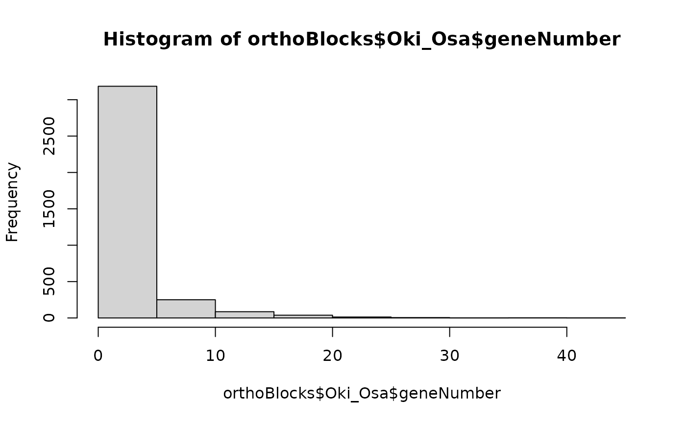
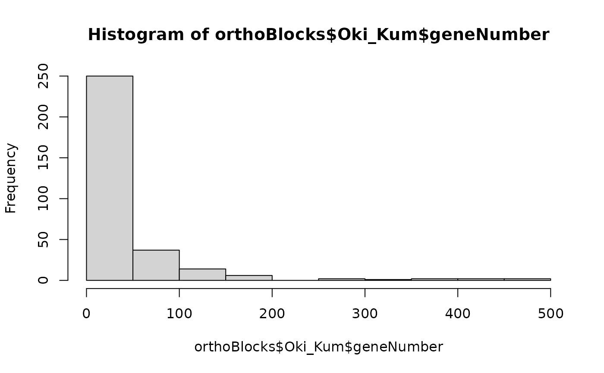
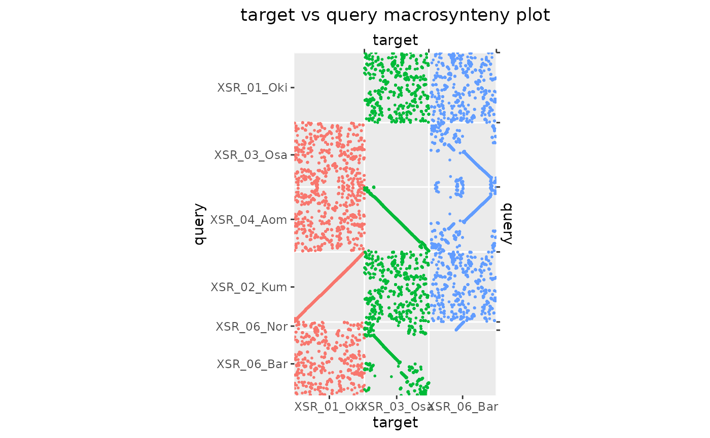
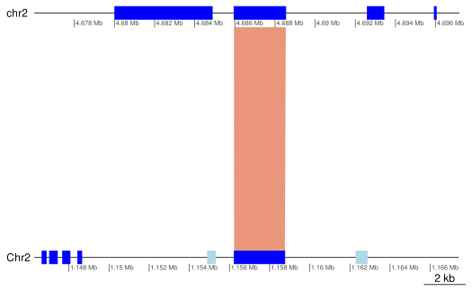
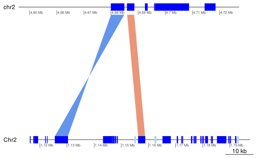
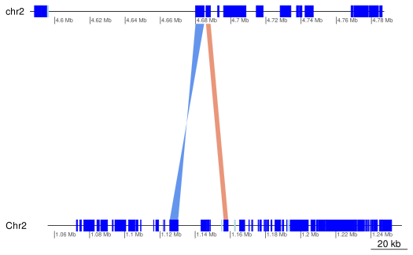
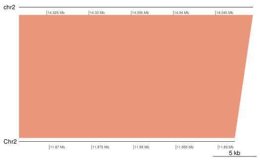
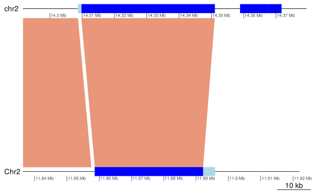
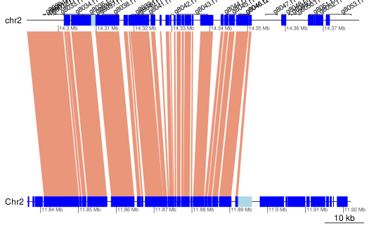

knitr::opts_knit$set(cache = TRUE)Load packages and data
See ?OikScrambling:::loadAllGenomes(), ?OikScrambling:::loadAllTranscriptsGR(), and vignette("LoadGenomicBreaks", package = "OikScrambling") for how the different objects are prepared.
library('OikScrambling') |> suppressPackageStartupMessages()
genomes <- OikScrambling:::loadAllGenomes(compat = F)
transcripts <- OikScrambling:::loadAllTranscriptsGR(compat = F) |> suppressWarnings()
load("BreakPoints.Rdata")Prepare GBreaks objects
Orthogroups for Oikopleura are loaded from the BreakpointsData package with the OikScrambling::load_one_to_ones() function. Original file is in /bucket/LuscombeU/common/Breakpoints/Orthologues/selTun+Apps+Amph+Vert_lp_100clstr_blast/OrthoFinder/Results_Oct07/Phylogenetic_Hierarchical_Orthogroups/N19.tsv. See news(package = "BreakpointsData") for inspecting changes in more details.
Load Orthogroup data
This produces GBreaks objects that map orthologs from between two genomes. In these objects, the target and query roles are equivalent. The genomic coordinates are taken from the annotation files (see ?OikScrambling:::loadAllTranscriptsGR.
Orthogroup pairs
To maximise number of entries, we load data from the larvacean and the ascidian subtrees respectively. This produces the orthoPairs collection of objects.
orthoGroupFileNames <- SimpleList(
AOM.5.5f = "AOM-5-5f.prot.longest.fa_1",
Bar2.p4 = "Bar2_p4.Flye.prot.longest.fa_1",
Ply = "C_int_P.prot.longest.fa_1",
Ros = "C_int_R.prot.longest.fa_1",
Int = "Ciona_intestinalis.Uniprot.rn.fa_1",
Sav = "Ciona_savignyi.Uniprot.rn.fa_1",
KUM.M3.7f = "KUM-M3-7f.prot.longest.fa_1",
OKI2018.I69 = "OKI2018_I69.v2.prot.longest.fa_1",
OSKA2016v1.9 = "OSKA2016v1.9.prot.longest.fa_1",
OdB3 = "OdB3.v1.0.prot.fa_1.nohaplo"
)
orthoPairToGBreaks <- function(genome1, genome2, transcripts, treeName="N19", HOGs=NULL) {
if(is.null(HOGs))
HOGs <- OikScrambling:::load_one_to_ones(
system.file(paste0("extdata/OrthoFinder/",treeName,".tsv"), package = "BreakpointsData"),
c(orthoGroupFileNames[[genome1]], orthoGroupFileNames[[genome2]]))
IDs2GRanges <- function (IDs, annot) {
prefix <- Biobase::lcPrefix(IDs) # Guess prefix in transcript IDs from HOG files
not_prefix <- Biobase::lcPrefix(annot$tx_name) # Remove trailing characters that are part of the name
not_prefix <- paste0(not_prefix,"$") # Anchor to end of the string
prefix <- sub(not_prefix, "", prefix) # Finalise prefix
IDs <- sub(prefix, "", IDs) # Remove prefix from IDS
names(annot) <- annot$tx_name # Store transcript name in names slot
gr <- annot[IDs] # Sort by ID
strand(gr) <- "*" # Make strandless
gr # Return the object
}
gb <- IDs2GRanges(HOGs[,orthoGroupFileNames[[genome1]]], transcripts[[genome1]])
if (!is.null(genomes[[genome1]]))
seqinfo(gb) <- seqinfo(genomes[[genome1]])
gb$query <- IDs2GRanges(HOGs[,orthoGroupFileNames[[genome2]]], transcripts[[genome2]])
if (!is.null(genomes[[genome2]]))
seqinfo(gb$query) <- seqinfo(genomes[[genome2]])
gb <- GenomicBreaks:::GBreaks(gb)
gb$HOG <- HOGs$HOG
gb$OG <- HOGs$OG
sort(gb)
}
flagLongShort_ <- function(gr, transcripts) {
genome <- unique(genome(gr))
flagLongShort(gr, transcripts[[genome]])
}
orthoPairToGBreaks_all_Oiks <- function(treeName=NULL, HOGs=NULL) {
orthoPairs <- SimpleList()
orthoPairs$Oki_Osa <- orthoPairToGBreaks("OKI2018.I69", "OSKA2016v1.9", transcripts, treeName, HOGs)
orthoPairs$Oki_Bar <- orthoPairToGBreaks("OKI2018.I69", "Bar2.p4", transcripts, treeName, HOGs)
orthoPairs$Oki_Kum <- orthoPairToGBreaks("OKI2018.I69", "KUM.M3.7f", transcripts, treeName, HOGs)
orthoPairs$Oki_Aom <- orthoPairToGBreaks("OKI2018.I69", "AOM.5.5f", transcripts, treeName, HOGs)
orthoPairs$Oki_Nor <- orthoPairToGBreaks("OKI2018.I69", "OdB3", transcripts, treeName, HOGs)
orthoPairs$Osa_Bar <- orthoPairToGBreaks("OSKA2016v1.9", "Bar2.p4", transcripts, treeName, HOGs)
orthoPairs$Osa_Oki <- orthoPairToGBreaks("OSKA2016v1.9", "OKI2018.I69", transcripts, treeName, HOGs)
orthoPairs$Osa_Kum <- orthoPairToGBreaks("OSKA2016v1.9", "KUM.M3.7f", transcripts, treeName, HOGs)
orthoPairs$Osa_Aom <- orthoPairToGBreaks("OSKA2016v1.9", "AOM.5.5f", transcripts, treeName, HOGs)
orthoPairs$Osa_Nor <- orthoPairToGBreaks("OSKA2016v1.9", "OdB3", transcripts, treeName, HOGs)
orthoPairs$Bar_Osa <- orthoPairToGBreaks("Bar2.p4", "OSKA2016v1.9", transcripts, treeName, HOGs)
orthoPairs$Bar_Oki <- orthoPairToGBreaks("Bar2.p4", "OKI2018.I69", transcripts, treeName, HOGs)
orthoPairs$Bar_Kum <- orthoPairToGBreaks("Bar2.p4", "KUM.M3.7f", transcripts, treeName, HOGs)
orthoPairs$Bar_Aom <- orthoPairToGBreaks("Bar2.p4", "AOM.5.5f", transcripts, treeName, HOGs)
orthoPairs$Bar_Nor <- orthoPairToGBreaks("Bar2.p4", "OdB3", transcripts, treeName, HOGs)
orthoPairs <- sapply(orthoPairs, flagLongShort_, longShort)
SimpleList(orthoPairs)
}
orthoPairs <- orthoPairToGBreaks_all_Oiks("N19")
orthoPairs$Ply_Ros <- orthoPairToGBreaks("Ply", "Ros", transcripts, treeName="N20")Orthogroup core pairs
The orthoPairs_core collection is built similarly, but from “core” orthogroups, that have a member in each species of the tunicate clade.
orthoPairs_core <- orthoPairToGBreaks_all_Oiks("N3")
orthoPairs_core$Ply_Ros <- orthoPairToGBreaks("Ply", "Ros", transcripts, treeName="N3")Orthogroups one-to-one in oiks.
Lastly we build an object for Oiks only where we require every orthologue to be present as a single copy in every genome. This is the orthoPairs_one2oneInOiks collection.
orthoPairs_one2oneInOiks <-
orthoPairToGBreaks_all_Oiks(treeName = NULL,
HOGs = OikScrambling:::load_one_to_ones(
system.file("extdata/OrthoFinder/N19.tsv", package = "BreakpointsData")))Summary
Here is the number of entries in each object.
sapply(orthoPairs, length)## Oki_Osa Oki_Bar Oki_Kum Oki_Aom Oki_Nor Osa_Bar Osa_Oki Osa_Kum Osa_Aom Osa_Nor
## 9538 9273 11525 9604 8771 9172 9538 9465 10379 8415
## Bar_Osa Bar_Oki Bar_Kum Bar_Aom Bar_Nor Ply_Ros
## 9172 9273 9223 9250 8508 5438
sapply(orthoPairs_core, length)## Oki_Osa Oki_Bar Oki_Kum Oki_Aom Oki_Nor Osa_Bar Osa_Oki Osa_Kum Osa_Aom Osa_Nor
## 6794 6697 8315 6902 6118 6707 6794 6697 7644 5981
## Bar_Osa Bar_Oki Bar_Kum Bar_Aom Bar_Nor Ply_Ros
## 6707 6697 6643 6804 6151 2582
sapply(orthoPairs_one2oneInOiks, length)## Oki_Osa Oki_Bar Oki_Kum Oki_Aom Oki_Nor Osa_Bar Osa_Oki Osa_Kum Osa_Aom Osa_Nor
## 5162 5162 5162 5162 5162 5162 5162 5162 5162 5162
## Bar_Osa Bar_Oki Bar_Kum Bar_Aom Bar_Nor
## 5162 5162 5162 5162 5162Remove overlapping annotations
Some transcript annotations overlap and this breaks the coalescing algorithm.
Here we produce non-overlapping versions of the objects.
transcripts$Bar2.p4 |> length()## [1] 15741## [1] 14262
flagOverlaps <- function(gr) {
# Find overlaps
ov <- findOverlaps(gr)
# Index of self hits in the gr object
idx <- queryHits(ov[!isSelfHit(ov)])
# Convert to Boolean indexing the gr object
seq_along(gr) %in% idx
}
transcripts$Bar2.p4[flagOverlaps(transcripts$Bar2.p4)]## GRanges object with 2668 ranges and 5 metadata columns:
## seqnames ranges strand | tx_id tx_name
## <Rle> <IRanges> <Rle> | <integer> <character>
## g107.t2 Chr1 495446-496292 + | 58 g107.t2
## g107.t1 Chr1 495446-496688 + | 59 g107.t1
## g138.t1 Chr1 687958-689814 + | 76 g138.t1
## g138.t2 Chr1 687958-689814 + | 77 g138.t2
## g147.t2 Chr1 748328-751932 + | 82 g147.t2
## ... ... ... ... . ... ...
## g13975.t2 YSR 4098404-4105602 - | 15657 g13975.t2
## g14058.t1 YSR 4778101-4778538 - | 15701 g14058.t1
## g14059.t1 YSR 4778480-4782151 - | 15702 g14059.t1
## g14064.t2 YSR 4817799-4819944 - | 15705 g14064.t2
## g14064.t1 YSR 4817799-4820671 - | 15706 g14064.t1
## dNdS_GUIDANCE2 dNdS_HmmCleaner dNdS_PRANK
## <numeric> <numeric> <numeric>
## g107.t2 NA NA NA
## g107.t1 NA NA NA
## g138.t1 NA NA NA
## g138.t2 0.05054 0.05386 0.05386
## g147.t2 NA NA NA
## ... ... ... ...
## g13975.t2 NA NA NA
## g14058.t1 NA NA NA
## g14059.t1 NA NA NA
## g14064.t2 NA NA NA
## g14064.t1 NA NA NA
## -------
## seqinfo: 68 sequences from Bar2.p4 genome
# Show examples
orthoPairs$Oki_Osa[flagOverlaps(orthoPairs$Oki_Osa)]## GBreaks object with 93 ranges and 9 metadata columns:
## seqnames ranges strand | tx_id tx_name
## <Rle> <IRanges> <Rle> | <integer> <character>
## g499.t1 chr1 2110061-2117154 * | 272 g499.t1
## g500.t1 chr1 2115711-2116788 * | 2381 g500.t1
## g544.t1 chr1 2238352-2256657 * | 297 g544.t1
## g545.t1 chr1 2251048-2252855 * | 2402 g545.t1
## g985.t1 chr1 3781719-3784744 * | 518 g985.t1
## ... ... ... ... . ... ...
## g15884.t1 XSR 8785428-8786009 * | 15900 g15884.t1
## g16057.t1 XSR 9342752-9345613 * | 18123 g16057.t1
## g16058.t1 XSR 9344384-9344779 * | 15985 g16058.t1
## g16592.t1 XSR 10958372-10959713 * | 18454 g16592.t1
## g16593.t1 XSR 10958914-10959511 * | 16264 g16593.t1
## dNdS_GUIDANCE2 dNdS_HmmCleaner dNdS_PRANK query
## <numeric> <numeric> <numeric> <GRanges>
## g499.t1 0.0299 0.03004 0.0329 Chr1:717839-724867
## g500.t1 NA NA NA Chr1:718410-719881
## g544.t1 NA NA NA Chr1:1777743-1781983
## g545.t1 NA NA NA Chr1:1783570-1784116
## g985.t1 NA NA NA Chr1:2597661-2601166
## ... ... ... ... ...
## g15884.t1 0.06523 0.09376 0.08999 XSR:1917337-1918103
## g16057.t1 NA NA NA XSR:5950541-5952986
## g16058.t1 0.00761 0.00524 0.00524 XSR:5950957-5951353
## g16592.t1 NA NA NA XSR:10797233-10798365
## g16593.t1 NA NA NA XSR:10797613-10797896
## HOG OG Arm
## <character> <character> <factor>
## g499.t1 N19.HOG0002425 OG0000263 short
## g500.t1 N19.HOG0007945 OG0003451 short
## g544.t1 N19.HOG0003237 OG0000486 short
## g545.t1 N19.HOG0015828 OG0019308 short
## g985.t1 N19.HOG0012972 OG0011801 short
## ... ... ... ...
## g15884.t1 N19.HOG0013867 OG0014177 XSR
## g16057.t1 N19.HOG0007856 OG0003342 XSR
## g16058.t1 N19.HOG0013727 OG0013149 XSR
## g16592.t1 N19.HOG0016102 OG0020123 XSR
## g16593.t1 N19.HOG0016845 OG0024775 XSR
## -------
## seqinfo: 19 sequences from OKI2018.I69 genome
orthoPairs$Oki_Osa$query[flagOverlaps(orthoPairs$Oki_Osa$query)]## GRanges object with 80 ranges and 5 metadata columns:
## seqnames ranges strand | tx_id tx_name
## <Rle> <IRanges> <Rle> | <integer> <character>
## g165.t1 Chr1 717839-724867 * | 1760 g165.t1
## g166.t1 Chr1 718410-719881 * | 84 g166.t1
## g343.t1 Chr1 1555362-1560721 * | 185 g343.t1
## g344.t1 Chr1 1555709-1558669 * | 1852 g344.t1
## g1318.t1 Chr1 5426128-5431903 * | 698 g1318.t1
## ... ... ... ... . ... ...
## g14741.t1 XSR 10797613-10797896 * | 16354 g14741.t1
## g13032.t1 XSR 5203787-5206862 * | 13405 g13032.t1
## g13031.t2 XSR 5199352-5210190 * | 15385 g13031.t2
## g13679.t1 XSR 7256274-7260299 * | 13797 g13679.t1
## g13680.t1 XSR 7258070-7259639 * | 15749 g13680.t1
## dNdS_GUIDANCE2 dNdS_HmmCleaner dNdS_PRANK
## <numeric> <numeric> <numeric>
## g165.t1 0.02990 0.03004 0.03290
## g166.t1 NA NA NA
## g343.t1 NA NA NA
## g344.t1 0.04569 0.05541 0.05541
## g1318.t1 NA NA NA
## ... ... ... ...
## g14741.t1 NA NA NA
## g13032.t1 NA NA NA
## g13031.t2 0.00897 0.00897 0.00897
## g13679.t1 NA NA NA
## g13680.t1 NA NA NA
## -------
## seqinfo: 483 sequences from OSKA2016v1.9 genome
# Remove and show how much was removed
orthoPairsFiltered <- sapply(orthoPairs, function(gb) {
gb <- gb[!flagOverlaps(gb)]
gb <- gb[!flagOverlaps(gb$query)]
gb
}) |> SimpleList()
orthoPairsFiltered_core <- sapply(orthoPairs_core, function(gb) {
gb <- gb[!flagOverlaps(gb)]
gb <- gb[!flagOverlaps(gb$query)]
gb
}) |> SimpleList()
orthoPairs_one2oneInOiks_Filtered <- sapply(orthoPairs_one2oneInOiks, function(gb) {
gb <- gb[!flagOverlaps(gb)]
gb <- gb[!flagOverlaps(gb$query)]
gb
}) |> SimpleList()
sapply(orthoPairs, length) - sapply(orthoPairsFiltered, length)## Oki_Osa Oki_Bar Oki_Kum Oki_Aom Oki_Nor Osa_Bar Osa_Oki Osa_Kum Osa_Aom Osa_Nor
## 132 131 202 166 119 98 132 114 121 103
## Bar_Osa Bar_Oki Bar_Kum Bar_Aom Bar_Nor Ply_Ros
## 98 132 119 108 125 26## Oki_Osa Oki_Bar Oki_Kum Oki_Aom Oki_Nor Osa_Bar Osa_Oki Osa_Kum Osa_Aom Osa_Nor
## 74 85 125 93 58 72 74 67 75 48
## Bar_Osa Bar_Oki Bar_Kum Bar_Aom Bar_Nor Ply_Ros
## 72 85 85 72 64 10## Oki_Osa Oki_Bar Oki_Kum Oki_Aom Oki_Nor Osa_Bar Osa_Oki Osa_Kum Osa_Aom Osa_Nor
## 18 26 14 18 38 26 18 20 16 44
## Bar_Osa Bar_Oki Bar_Kum Bar_Aom Bar_Nor
## 26 26 26 26 52Coalesce syntenic blocks and annotate them
coalOrtho <- function(gb) {
# Coalesce
coal <- coalesce_contigs(gb)
# Map annotations to the coalesced blocks
ov <- findOverlaps(coal, gb)
# Extract gene names mapped to each blocks
coal$geneNames <- CharacterList(split(names(gb)[subjectHits(ov)], queryHits(ov))) |> unname()
# We can use the `ov` object for query ranges as well because of the way `coal` was constructed.
coal$query$geneNames <- CharacterList(split(names(gb$query)[subjectHits(ov)], queryHits(ov))) |> unname()
# Extract dNdS values
coal$dNdS_GUIDANCE2 <- NumericList(split(gb$dNdS_GUIDANCE2 [subjectHits(ov)], queryHits(ov)))
coal$dNdS_HmmCleaner <- NumericList(split(gb$dNdS_HmmCleaner[subjectHits(ov)], queryHits(ov)))
coal$dNdS_PRANK <- NumericList(split(gb$dNdS_PRANK [subjectHits(ov)], queryHits(ov)))
# We just copy dNdS values to query ranges because they are the same.
coal$query$dNdS_GUIDANCE2 <- coal$dNdS_GUIDANCE2
coal$query$dNdS_HmmCleaner <- coal$dNdS_HmmCleaner
coal$query$dNdS_PRANK <- coal$dNdS_PRANK
# Count genes per syntenic block
coal$geneNumber <- sapply(coal$geneNames, length)
coal
}
orthoBlocks <- sapply(orthoPairsFiltered[1:15], coalOrtho) |> SimpleList()
orthoBlocks$Ply_Ros <- coalesce_contigs(orthoPairsFiltered$Ply_Ros)
orthoBlocks[ 1:15 ] <- sapply(orthoBlocks[ 1:15 ], flagLongShort_, longShort)
orthoBlocks_core <- sapply(orthoPairsFiltered_core[1:15], coalOrtho) |> SimpleList()
orthoBlocks_core$Ply_Ros <- coalesce_contigs(orthoPairsFiltered_core$Ply_Ros)
orthoBlocks_core[ 1:15 ] <- sapply(orthoBlocks_core[ 1:15 ], flagLongShort_, longShort)
orthoBlocks_one2oneInOiks <- sapply(orthoPairs_one2oneInOiks_Filtered, coalOrtho) |> SimpleList()
orthoBlocks_one2oneInOiks <- sapply(orthoBlocks_one2oneInOiks, flagLongShort_, longShort) |> SimpleList()
sapply(orthoPairsFiltered, length)## Oki_Osa Oki_Bar Oki_Kum Oki_Aom Oki_Nor Osa_Bar Osa_Oki Osa_Kum Osa_Aom Osa_Nor
## 9406 9142 11323 9438 8652 9074 9406 9351 10258 8312
## Bar_Osa Bar_Oki Bar_Kum Bar_Aom Bar_Nor Ply_Ros
## 9074 9141 9104 9142 8383 5412
sapply(orthoBlocks, length)## Oki_Osa Oki_Bar Oki_Kum Oki_Aom Oki_Nor Osa_Bar Osa_Oki Osa_Kum Osa_Aom Osa_Nor
## 3581 3375 316 3533 3514 1443 3581 3533 455 1806
## Bar_Osa Bar_Oki Bar_Kum Bar_Aom Bar_Nor Ply_Ros
## 1443 3373 3333 1418 907 2185
sapply(orthoPairsFiltered_core, length)## Oki_Osa Oki_Bar Oki_Kum Oki_Aom Oki_Nor Osa_Bar Osa_Oki Osa_Kum Osa_Aom Osa_Nor
## 6720 6612 8190 6809 6060 6635 6720 6630 7569 5933
## Bar_Osa Bar_Oki Bar_Kum Bar_Aom Bar_Nor Ply_Ros
## 6635 6612 6558 6732 6087 2572
sapply(orthoBlocks_core, length)## Oki_Osa Oki_Bar Oki_Kum Oki_Aom Oki_Nor Osa_Bar Osa_Oki Osa_Kum Osa_Aom Osa_Nor
## 2618 2484 226 2598 2496 1119 2618 2548 361 1403
## Bar_Osa Bar_Oki Bar_Kum Bar_Aom Bar_Nor Ply_Ros
## 1119 2482 2449 1078 773 664
sapply(orthoPairs_one2oneInOiks_Filtered, length)## Oki_Osa Oki_Bar Oki_Kum Oki_Aom Oki_Nor Osa_Bar Osa_Oki Osa_Kum Osa_Aom Osa_Nor
## 5144 5136 5148 5144 5124 5136 5144 5142 5146 5118
## Bar_Osa Bar_Oki Bar_Kum Bar_Aom Bar_Nor
## 5136 5136 5136 5136 5110
sapply(orthoBlocks_one2oneInOiks, length)## Oki_Osa Oki_Bar Oki_Kum Oki_Aom Oki_Nor Osa_Bar Osa_Oki Osa_Kum Osa_Aom Osa_Nor
## 2074 2013 93 2058 2227 848 2074 2076 188 1204
## Bar_Osa Bar_Oki Bar_Kum Bar_Aom Bar_Nor
## 848 2013 2013 826 601Compute bridge regions
Let’s pre-compute bridge regions with the GenomicBreaks::bridgeRegions() function.
# oP_bridges <- sapply(orthoPairsFiltered, bridgeRegions) |> SimpleList()
# oP_core_bridges <- sapply(orthoPairsFiltered_core, bridgeRegions) |> SimpleList()
oP_one2oneInOiks_bridges <- sapply(orthoPairs_one2oneInOiks_Filtered, bridgeRegions) |> SimpleList()Size distribution of the blocks
hist(orthoBlocks$Oki_Osa$geneNumber)
table(orthoBlocks$Oki_Osa$geneNumber)##
## 1 2 3 4 5 6 7 8 9 10 11 12 13 14 15 16
## 2096 561 244 190 94 84 52 47 37 30 24 16 21 16 9 7
## 17 18 19 20 21 22 23 24 25 26 27 28 29 31 38 40
## 11 10 6 4 3 2 2 5 1 1 2 1 1 1 1 1
## 44
## 1## GBreaks object with 11 ranges and 8 metadata columns:
## seqnames ranges strand | query score
## <Rle> <IRanges> <Rle> | <GRanges> <integer>
## [1] XSR 7131851-7238581 * | XSR:3999405-4095337 106731
## [2] PAR 15956464-16063993 * | PAR:10902456-10995025 107530
## [3] XSR 3436117-3526092 * | XSR:2172085-2264761 89976
## [4] PAR 10906073-11000190 * | PAR:9275473-9359780 94118
## [5] XSR 7246798-7345874 * | XSR:4104726-4194323 99077
## [6] XSR 7562507-7713904 * | XSR:3625761-3772339 151398
## [7] XSR 6441868-6594575 * | XSR:10009542-10156377 152708
## [8] chr2 14727816-14844427 * | Chr2:8441071-8537126 116612
## [9] chr2 10668710-10828262 * | Chr2:5679751-5827304 159553
## [10] PAR 15193339-15358002 * | PAR:11170991-11285909 164664
## [11] XSR 6597685-6797170 * | XSR:9796684-10005669 199486
## geneNames dNdS_GUIDANCE2
## <CharacterList> <NumericList>
## [1] g15372.t1,g15373.t1,g15375.t1,... NA,0.01805,0.03746,...
## [2] g12997.t1,g12998.t1,g12999.t1,... 0.05858,0.00080, NA,...
## [3] g14231.t1,g14232.t1,g14233.t1,... 0.0168, NA, NA,...
## [4] g11569.t1,g11570.t1,g11571.t1,... 0.02328, NA, NA,...
## [5] g15407.t1,g15408.t1,g15410.t1,... 0.00543,0.05808, NA,...
## [6] g15509.t1,g15511.t1,g15512.t4,... 0.03440,0.09182,0.03833,...
## [7] g15154.t1,g15156.t1,g15157.t1,... 0.06059, NA,0.02761,...
## [8] g8160.t1,g8161.t1,g8163.t1,... 0.01678,0.03361,0.01543,...
## [9] g6993.t1,g6996.t1,g6997.t2,... NA, NA,0.01518,...
## [10] g12780.t1,g12781.t1,g12782.t1,... NA,NA,NA,...
## [11] g15204.t1,g15205.t1,g15206.t1,... 0.02776,0.02098,0.05115,...
## dNdS_HmmCleaner dNdS_PRANK geneNumber
## <NumericList> <NumericList> <integer>
## [1] NA,0.01966,0.04001,... NA,0.01939,0.04001,... 24
## [2] 0.05657,0.00080, NA,... 0.05657,0.00080, NA,... 25
## [3] 0.0168, NA, NA,... 0.01823, NA, NA,... 26
## [4] 0.02575, NA, NA,... 0.02575, NA, NA,... 27
## [5] 0.00712,0.05952, NA,... 0.00893,0.05955, NA,... 27
## [6] 0.03475,0.09710,0.04044,... 0.03525,0.09034,0.03789,... 28
## [7] 0.05943, NA,0.03195,... 0.05943, NA,0.03195,... 29
## [8] 0.01670,0.03300,0.01543,... 0.01938,0.03378,0.01543,... 31
## [9] NA, NA,0.01606,... NA, NA,0.01658,... 38
## [10] NA,NA,NA,... NA,NA,NA,... 40
## [11] 0.02776,0.02367,0.05515,... 0.02776,0.02364,0.05424,... 44
## Arm
## <factor>
## [1] XSR
## [2] long
## [3] XSR
## [4] long
## [5] XSR
## [6] XSR
## [7] XSR
## [8] long
## [9] long
## [10] long
## [11] XSR
## -------
## seqinfo: 19 sequences from OKI2018.I69 genome
hist(orthoBlocks$Oki_Kum$geneNumber)
table(orthoBlocks$Oki_Kum$geneNumber)##
## 1 2 3 4 5 6 7 8 9 10 11 12 13 14 15 16 17 18 19 20
## 76 24 20 15 8 4 8 3 5 4 7 4 3 4 4 2 3 4 4 3
## 22 23 24 25 26 27 28 29 30 31 32 33 34 36 37 39 40 42 44 47
## 2 2 2 3 3 2 2 1 2 3 2 1 1 3 1 2 1 3 2 1
## 48 49 50 51 54 55 56 57 58 61 63 64 65 68 69 70 71 75 76 78
## 2 1 3 1 3 1 2 2 1 1 1 1 4 2 2 1 1 1 2 1
## 80 81 83 87 90 92 94 96 97 102 103 104 106 107 114 117 118 141 142 143
## 1 1 1 1 1 1 2 1 1 2 1 1 1 1 1 1 2 1 1 1
## 149 161 170 180 197 199 200 264 269 308 356 367 423 438 459 475
## 1 1 1 1 1 1 1 1 1 1 1 1 1 1 1 1## GBreaks object with 11 ranges and 8 metadata columns:
## seqnames ranges strand | query
## <Rle> <IRanges> <Rle> | <GRanges>
## [1] PAR 9991049-10823433 * | contig_28_1:906-916604
## [2] XSR 1398297-2355032 * | contig_42_1:1522014-2519191
## [3] chr1 6729778-8085886 * | contig_90_1:571-1399045
## [4] chr1 8676861-10061915 * | contig_3_1:618849-1981910
## [5] PAR 7792256-9333620 * | contig_82_1:846722-2300436
## [6] PAR 11974020-13925498 * | contig_28_1:2026940-3782149
## [7] XSR 7904454-9304595 * | contig_42_1:7880616-9254847
## [8] chr2 5748389-7696653 * | contig_24_1:12160-1868534
## [9] XSR 4988262-6642828 * | contig_42_1:4994508-6631430
## [10] XSR 9308304-11123841 * | contig_42_1:9258557-11063801
## [11] XSR 2649320-4576212 * | contig_42_1:2787081-4661476
## score geneNames dNdS_GUIDANCE2
## <integer> <CharacterList> <NumericList>
## [1] 832385 g11259.t1,g11261.t1,g11262.t1,... NA, NA,0.01453,...
## [2] 956736 g13662.t1,g13663.t1,g13665.t1,... NA,0.03728,0.01538,...
## [3] 1356109 g1763.t1,g1772.t1,g1773.t1,... NA,NA,NA,...
## [4] 1385055 g2316.t1,g2317.t1,g2319.t1,... NA,0.01342,0.01277,...
## [5] 1541365 g10595.t1,g10596.t1,g10597.t1,... NA,0.01305,0.02206,...
## [6] 1951479 g11881.t1,g11883.t1,g11885.t1,... NA,NA,NA,...
## [7] 1400142 g15616.t1,g15617.t1,g15619.t1,... 0.01284,0.03441, NA,...
## [8] 1948265 g5514.t1,g5516.t1,g5518.t1,... NA,NA,NA,...
## [9] 1654567 g14704.t1,g14705.t1,g14706.t1,... 0.00618,0.02254, NA,...
## [10] 1815538 g16044.t1,g16046.t1,g16049.t1,... NA,0.01639,0.02433,...
## [11] 1926893 g13995.t1,g13996.t1,g13998.t1,... 0.03604,0.10111, NA,...
## dNdS_HmmCleaner dNdS_PRANK geneNumber
## <NumericList> <NumericList> <integer>
## [1] NA, NA,0.01482,... NA, NA,0.01568,... 199
## [2] NA,0.03195,0.01978,... NA,0.03195,0.01978,... 200
## [3] NA,NA,NA,... NA,NA,NA,... 264
## [4] NA,0.01342,0.01277,... NA,0.01530,0.01277,... 269
## [5] NA,0.01227,0.02460,... NA,0.01227,0.02460,... 308
## [6] NA,NA,NA,... NA,NA,NA,... 356
## [7] 0.01400,0.00844, NA,... 0.01579,0.00844, NA,... 367
## [8] NA,NA,NA,... NA,NA,NA,... 423
## [9] 0.00656,0.01781, NA,... 0.00656,0.01781, NA,... 438
## [10] NA,0.02021,0.02433,... NA,0.02021,0.02433,... 459
## [11] 0.03765,0.10611, NA,... 0.03765,0.10611, NA,... 475
## Arm
## <factor>
## [1] long
## [2] XSR
## [3] long
## [4] long
## [5] long
## [6] long
## [7] XSR
## [8] long
## [9] XSR
## [10] XSR
## [11] XSR
## -------
## seqinfo: 19 sequences from OKI2018.I69 genomeGene Order Conservation is smaller in short arms
orthoBlocks_LSnoNA <- sapply(orthoBlocks[1:15], function(gb) gb[!is.na(gb$Arm)]) |> SimpleList()
sapply(orthoBlocks_LSnoNA, length)## Oki_Osa Oki_Bar Oki_Kum Oki_Aom Oki_Nor Osa_Bar Osa_Oki Osa_Kum Osa_Aom Osa_Nor
## 3579 3373 313 3531 3512 1402 3524 3480 410 1763
## Bar_Osa Bar_Oki Bar_Kum Bar_Aom Bar_Nor
## 1423 3350 3308 1398 892
df <- sapply(orthoBlocks_LSnoNA,
function(gb) tapply(gb, paste(seqnames(gb), gb$Arm), GOC))
apply(df, 2, \(x) {
tst <- t.test(x[c(1,3,5)], x[c(2,4,6)])
c(pval=tst$p.value, mx=tst$estimate[1], my=tst$estimate[2])
}) ## Oki_Osa Oki_Bar Oki_Kum Oki_Aom Oki_Nor
## pval 0.0003445748 0.001195248 0.4563762 0.01734870 0.008449444
## mx.mean of x 0.1853163526 0.181080056 0.5647566 0.18213329 0.174234572
## my.mean of y 0.0629330841 0.061442980 0.6188030 0.06829154 0.062364224
## Osa_Bar Osa_Oki Osa_Kum Osa_Aom Osa_Nor Bar_Osa
## pval 0.05013474 0.002520974 0.00755681 0.0337040 0.01972651 0.1684680
## mx.mean of x 0.42449520 0.196644110 0.18306629 0.7109280 0.32803812 0.3897294
## my.mean of y 0.28083551 0.073813557 0.07284716 0.5246518 0.20384140 0.2739641
## Bar_Oki Bar_Kum Bar_Aom Bar_Nor
## pval 0.0007675276 0.008239524 0.09425889 0.7257221
## mx.mean of x 0.1855144293 0.183651905 0.41363040 0.3391719
## my.mean of y 0.0709205522 0.070638469 0.27714160 0.3885798Click to expand results on a microbenchmark comparing
sapply(split) and tapply
> microbenchmark::microbenchmark(
times = 10,
sapply = sapply(split(x, paste(seqnames(x), x$Arm)), GOC),
tapply = tapply(x, paste(seqnames(x), x$Arm), GOC)
)
Unit: seconds
expr min lq mean median uq max neval
sapply 6.853530 6.921293 7.050267 6.949315 7.270793 7.477390 10
tapply 6.921118 6.923827 7.028373 6.939487 6.968288 7.431115 10Fraction of the genome covered or syntenic
uncov <- BiocParallel::bplapply(orthoPairsFiltered, cleanGaps) |> SimpleList()
unsyn <- BiocParallel::bplapply(orthoBlocks, cleanGaps) |> SimpleList()
covered_tot <- sapply(orthoPairsFiltered, \(x) sum(width(x)))
syntenic_tot <- sapply(orthoBlocks, \(x) sum(width(x)))
uncovered_tot <- sapply(uncov, \(x) sum(width(x)))
unsyntenic_tot <- sapply(unsyn, \(x) sum(width(x)))
(syn_summary <- cbind(
covered_frac = covered_tot / ( covered_tot + uncovered_tot ) * 100,
orthogenes_n = sapply(orthoPairsFiltered, length),
syntenic_frac = syntenic_tot / ( syntenic_tot + unsyntenic_tot ) * 100,
syntenic_reg = sapply(orthoBlocks, length)
)|> as.data.frame())## covered_frac orthogenes_n syntenic_frac syntenic_reg
## Oki_Osa 38.33865 9406 61.29621 3581
## Oki_Bar 38.21979 9142 60.42189 3375
## Oki_Kum 43.70838 11323 92.95563 316
## Oki_Aom 38.60839 9438 61.35116 3533
## Oki_Nor 34.90562 8652 54.26659 3514
## Osa_Bar 42.10034 9074 76.09101 1443
## Osa_Oki 43.87692 9406 65.46897 3581
## Osa_Kum 42.96814 9351 63.74943 3533
## Osa_Aom 45.38916 10258 88.99277 455
## Osa_Nor 38.20910 8312 69.36702 1806
## Bar_Osa 40.94778 9074 73.69212 1443
## Bar_Oki 41.86938 9141 61.92448 3373
## Bar_Kum 42.24314 9104 62.47976 3333
## Bar_Aom 41.88404 9142 74.65392 1418
## Bar_Nor 38.13315 8383 75.49597 907
## Ply_Ros 25.53249 5412 56.86698 2185
sapply(syn_summary, \(x) tapply(x, row.names(syn_summary) |> OikScrambling:::compDistance(), mean)) |> round(1)## covered_frac orthogenes_n syntenic_frac syntenic_reg
## In same pop 42.4 9988.0 85.8 559.3
## Int – Int 25.5 5412.0 56.9 2185.0
## North – North 40.8 8900.5 73.5 1527.5
## Oki – North 40.1 9205.0 61.4 3477.9
sapply(syn_summary, \(x) tapply(x, row.names(syn_summary) |> OikScrambling:::compDistance(), median)) |> round(1)## covered_frac orthogenes_n syntenic_frac syntenic_reg
## In same pop 43.7 10258.0 89.0 455.0
## Int – Int 25.5 5412.0 56.9 2185.0
## North – North 41.4 9074.0 74.2 1443.0
## Oki – North 40.2 9246.5 61.6 3523.5
sapply(syn_summary, \(x) tapply(x, row.names(syn_summary) |> OikScrambling:::compDistance(), sd)) |> round(1)## covered_frac orthogenes_n syntenic_frac syntenic_reg
## In same pop 3.8 1488.5 9.2 309.0
## Int – Int NA NA NA NA
## North – North 1.8 393.6 2.9 186.0
## Oki – North 3.1 262.0 3.3 100.9Unfortunately, there are not enough transcripts from Ciona that are part of the pan-tunicate orthogroup set, which makes the comparison difficult between Oikopleura and Ciona…
uncov <- BiocParallel::bplapply(orthoPairsFiltered_core, cleanGaps) |> SimpleList()
unsyn <- BiocParallel::bplapply(orthoBlocks_core, cleanGaps) |> SimpleList()
covered_tot <- sapply(orthoPairsFiltered_core, \(x) sum(width(x)))
syntenic_tot <- sapply(orthoBlocks_core, \(x) sum(width(x)))
uncovered_tot <- sapply(uncov, \(x) sum(width(x)))
unsyntenic_tot <- sapply(unsyn, \(x) sum(width(x)))
(syn_summary_core <- cbind(
covered_frac = covered_tot / ( covered_tot + uncovered_tot ) * 100,
orthogenes_n = sapply(orthoPairsFiltered_core, length),
syntenic_frac = syntenic_tot / ( syntenic_tot + unsyntenic_tot ) * 100,
syntenic_reg = sapply(orthoBlocks_core, length)
)|> as.data.frame())## covered_frac orthogenes_n syntenic_frac syntenic_reg
## Oki_Osa 27.48424 6720 51.25475 2618
## Oki_Bar 28.30197 6612 53.38051 2484
## Oki_Kum 31.22509 8190 91.90604 226
## Oki_Aom 28.75649 6809 53.16578 2598
## Oki_Nor 24.52914 6060 43.63803 2496
## Osa_Bar 31.13847 6635 70.58493 1119
## Osa_Oki 30.76206 6720 53.18648 2618
## Osa_Kum 30.69252 6630 53.01613 2548
## Osa_Aom 33.29049 7569 86.52898 361
## Osa_Nor 27.50044 5933 62.12065 1403
## Bar_Osa 30.15263 6635 67.64302 1119
## Bar_Oki 30.84109 6612 52.63710 2482
## Bar_Kum 31.17019 6558 52.57260 2449
## Bar_Aom 31.42929 6732 69.47170 1078
## Bar_Nor 27.93441 6087 70.48772 773
## Ply_Ros 11.39509 2572 50.30680 664
sapply(syn_summary_core, \(x) tapply(x, row.names(syn_summary_core) |> OikScrambling:::compDistance(), mean)) |> round(1)## covered_frac orthogenes_n syntenic_frac syntenic_reg
## In same pop 30.8 7282.0 83.0 453.3
## Int – Int 11.4 2572.0 50.3 664.0
## North – North 30.1 6483.8 67.5 1179.8
## Oki – North 29.1 6590.1 51.6 2536.6
sapply(syn_summary_core, \(x) tapply(x, row.names(syn_summary_core) |> OikScrambling:::compDistance(), median)) |> round(1)## covered_frac orthogenes_n syntenic_frac syntenic_reg
## In same pop 31.2 7569 86.5 361
## Int – Int 11.4 2572 50.3 664
## North – North 30.6 6635 68.6 1119
## Oki – North 29.7 6621 52.8 2522
sapply(syn_summary_core, \(x) tapply(x, row.names(syn_summary_core) |> OikScrambling:::compDistance(), sd)) |> round(1)## covered_frac orthogenes_n syntenic_frac syntenic_reg
## In same pop 2.7 1080.5 11.1 284.9
## Int – Int NA NA NA NA
## North – North 1.8 370.0 3.8 150.1
## Oki – North 2.3 228.7 3.3 67.8Agreement with nucleotide alignments
(gb_P <- orthoBlocks$Bar_Osa)## GBreaks object with 1443 ranges and 8 metadata columns:
## seqnames ranges strand | query score
## <Rle> <IRanges> <Rle> | <GRanges> <integer>
## [1] Chr1 17796-21383 * | Chr1:3581251-3591380 3588
## [2] Chr1 27418-60748 * | Chr1:3596010-3622624 33331
## [3] Chr1 69763-74781 * | Chr1:3644537-3650503 5019
## [4] Chr1 87558-91675 * | Chr1:3818944-3824036 4118
## [5] Chr1 92754-103548 * | Chr1:3833970-3843493 10795
## ... ... ... ... . ... ...
## [1439] YSR 4033286-4033798 * | YSR:1457970-1458977 513
## [1440] YSR 4086487-4086957 * | Chr1:8499823-8501898 471
## [1441] YSR 4321609-4322813 * | YSR:1599784-1602684 1205
## [1442] YSR 4865878-4866414 * | YSR:434383-434709 537
## [1443] YSR 5097970-5098632 * | YSR:1729503-1738428 663
## geneNames dNdS_GUIDANCE2
## <CharacterList> <NumericList>
## [1] g1.t1,g2.t1 0.04071,0.04756
## [2] g4.t1,g5.t1,g6.t1,... NA,NA,NA,...
## [3] g16.t1,g17.t1,g18.t1,... 0.00746,0.03727,0.06337,...
## [4] g22.t1,g23.t1 NA,NA
## [5] g24.t1,g25.t1 NA,0.04723
## ... ... ...
## [1439] g13965.t1 NA
## [1440] g13972.t1 NA
## [1441] g13991.t1 NA
## [1442] g14068.t1 NA
## [1443] g14100.t1 NA
## dNdS_HmmCleaner dNdS_PRANK geneNumber
## <NumericList> <NumericList> <integer>
## [1] 0.04071,0.05590 0.04071,0.05407 2
## [2] NA,NA,NA,... NA,NA,NA,... 8
## [3] 0.00746,0.04309,0.06258,... 0.00746,0.04309,0.06258,... 4
## [4] NA,NA NA,NA 2
## [5] NA,0.04214 NA,0.04431 2
## ... ... ... ...
## [1439] NA NA 1
## [1440] NA NA 1
## [1441] NA NA 1
## [1442] NA NA 1
## [1443] NA NA 1
## Arm
## <factor>
## [1] short
## [2] short
## [3] short
## [4] short
## [5] short
## ... ...
## [1439] YSR
## [1440] YSR
## [1441] YSR
## [1442] YSR
## [1443] YSR
## -------
## seqinfo: 68 sequences from Bar2.p4 genome## [1] 39929544
(gb_N <- coa$Bar_Osa)## GBreaks object with 4073 ranges and 8 metadata columns:
## seqnames ranges strand | query score
## <Rle> <IRanges> <Rle> | <GRanges> <integer>
## [1] Chr1 15573-21624 - | Chr1:3585703-3594761 6052
## [2] Chr1 22042-22295 + | Chr1:3585140-3585392 254
## [3] Chr1 22421-24048 - | Chr1:3583028-3584936 1628
## [4] Chr1 27262-34408 + | Chr1:3595848-3601817 7147
## [5] Chr1 34435-34998 - | Chr1:3602092-3602509 564
## ... ... ... ... . ... ...
## [4069] YSR 5273802-5274176 - | YSR:1632176-1632556 375
## [4070] YSR 5288325-5289549 - | YSR:1086332-1087481 1225
## [4071] YSR 5307497-5310556 - | Chr1:9561929-9564982 3060
## [4072] YSR 5322809-5325938 - | PAR:5433966-5437098 3130
## [4073] YSR 5335965-5336405 - | Chr2:928224-928659 441
## Arm rep repOvlp transcripts flag
## <factor> <CharacterList> <integer> <Rle> <character>
## [1] short tandem,unknown,rnd 210 g2.t1 Inv
## [2] short <NA> 0 <NA> <NA>
## [3] short <NA> 0 <NA> <NA>
## [4] short rnd 390 <NA> Inv
## [5] short rnd 0 g5.t1 <NA>
## ... ... ... ... ... ...
## [4069] YSR <NA> 0 <NA> <NA>
## [4070] YSR <NA> 0 g14124.t1 <NA>
## [4071] YSR rnd 0 g14124.t1 <NA>
## [4072] YSR rnd 0 <NA> <NA>
## [4073] YSR rnd 304 <NA> <NA>
## nonCoa
## <logical>
## [1] FALSE
## [2] TRUE
## [3] FALSE
## [4] FALSE
## [5] TRUE
## ... ...
## [4069] TRUE
## [4070] TRUE
## [4071] TRUE
## [4072] TRUE
## [4073] TRUE
## -------
## seqinfo: 68 sequences from Bar2.p4 genome## [1] 45289525
(ov <- subsetByOverlaps(gb_P, gb_N, type = "within"))## GBreaks object with 918 ranges and 8 metadata columns:
## seqnames ranges strand | query score
## <Rle> <IRanges> <Rle> | <GRanges> <integer>
## [1] Chr1 17796-21383 * | Chr1:3581251-3591380 3588
## [2] Chr1 69763-74781 * | Chr1:3644537-3650503 5019
## [3] Chr1 87558-91675 * | Chr1:3818944-3824036 4118
## [4] Chr1 92754-103548 * | Chr1:3833970-3843493 10795
## [5] Chr1 103823-135737 * | Chr1:2195467-2232252 31915
## ... ... ... ... . ... ...
## [914] YSR 3597539-3598992 * | Chr1:269069-271045 1454
## [915] YSR 3599919-3601165 * | Chr1:4173793-4175304 1247
## [916] YSR 3631705-3633609 * | Chr1:4315390-4317451 1905
## [917] YSR 4086487-4086957 * | Chr1:8499823-8501898 471
## [918] YSR 4865878-4866414 * | YSR:434383-434709 537
## geneNames dNdS_GUIDANCE2
## <CharacterList> <NumericList>
## [1] g1.t1,g2.t1 0.04071,0.04756
## [2] g16.t1,g17.t1,g18.t1,... 0.00746,0.03727,0.06337,...
## [3] g22.t1,g23.t1 NA,NA
## [4] g24.t1,g25.t1 NA,0.04723
## [5] g26.t1,g27.t1,g28.t1,... 0.02336, NA,0.03624,...
## ... ... ...
## [914] g13905.t1 0.03202
## [915] g13906.t1 NA
## [916] g13910.t1 0.02976
## [917] g13972.t1 NA
## [918] g14068.t1 NA
## dNdS_HmmCleaner dNdS_PRANK geneNumber
## <NumericList> <NumericList> <integer>
## [1] 0.04071,0.05590 0.04071,0.05407 2
## [2] 0.00746,0.04309,0.06258,... 0.00746,0.04309,0.06258,... 4
## [3] NA,NA NA,NA 2
## [4] NA,0.04214 NA,0.04431 2
## [5] 0.02316, NA,0.03757,... 0.02511, NA,0.03837,... 5
## ... ... ... ...
## [914] 0.03535 0.03535 1
## [915] NA NA 1
## [916] 0.02967 0.03291 1
## [917] NA NA 1
## [918] NA NA 1
## Arm
## <factor>
## [1] short
## [2] short
## [3] short
## [4] short
## [5] short
## ... ...
## [914] YSR
## [915] YSR
## [916] YSR
## [917] YSR
## [918] YSR
## -------
## seqinfo: 68 sequences from Bar2.p4 genome## [1] 0.1434809
gb_P <- gb_P[gb_P$geneNumber > 1]
gb_P## GBreaks object with 867 ranges and 8 metadata columns:
## seqnames ranges strand | query score
## <Rle> <IRanges> <Rle> | <GRanges> <integer>
## [1] Chr1 17796-21383 * | Chr1:3581251-3591380 3588
## [2] Chr1 27418-60748 * | Chr1:3596010-3622624 33331
## [3] Chr1 69763-74781 * | Chr1:3644537-3650503 5019
## [4] Chr1 87558-91675 * | Chr1:3818944-3824036 4118
## [5] Chr1 92754-103548 * | Chr1:3833970-3843493 10795
## ... ... ... ... . ... ...
## [863] XSR 12286992-12366325 * | XSR:9201073-9267597 79334
## [864] YSR 268825-302025 * | Chr1:1911761-1929212 33201
## [865] YSR 518298-532357 * | Chr2:12195648-12210212 14060
## [866] YSR 1387847-1390918 * | Chr1:1811359-1814424 3072
## [867] YSR 2712461-2719315 * | YSR:1128232-1134212 6855
## geneNames dNdS_GUIDANCE2
## <CharacterList> <NumericList>
## [1] g1.t1,g2.t1 0.04071,0.04756
## [2] g4.t1,g5.t1,g6.t1,... NA,NA,NA,...
## [3] g16.t1,g17.t1,g18.t1,... 0.00746,0.03727,0.06337,...
## [4] g22.t1,g23.t1 NA,NA
## [5] g24.t1,g25.t1 NA,0.04723
## ... ... ...
## [863] g13291.t1,g13292.t2,g13293.t2,... NA,NA,NA,...
## [864] g13345.t1,g13347.t1,g13348.t1,... NA,NA,NA,...
## [865] g13390.t1,g13392.t1 NA,NA
## [866] g13542.t1,g13543.t1 NA,NA
## [867] g13745.t1,g13747.t1 NA,NA
## dNdS_HmmCleaner dNdS_PRANK geneNumber
## <NumericList> <NumericList> <integer>
## [1] 0.04071,0.05590 0.04071,0.05407 2
## [2] NA,NA,NA,... NA,NA,NA,... 8
## [3] 0.00746,0.04309,0.06258,... 0.00746,0.04309,0.06258,... 4
## [4] NA,NA NA,NA 2
## [5] NA,0.04214 NA,0.04431 2
## ... ... ... ...
## [863] NA,NA,NA,... NA,NA,NA,... 20
## [864] NA,NA,NA,... NA,NA,NA,... 4
## [865] NA,NA NA,NA 2
## [866] NA,NA NA,NA 2
## [867] NA,NA NA,NA 2
## Arm
## <factor>
## [1] short
## [2] short
## [3] short
## [4] short
## [5] short
## ... ...
## [863] XSR
## [864] YSR
## [865] YSR
## [866] YSR
## [867] YSR
## -------
## seqinfo: 68 sequences from Bar2.p4 genome
sum(gb_P$geneNumber)## [1] 8498
(valid <- subsetByOverlaps(gb_P, gb_N, type = "within"))## GBreaks object with 462 ranges and 8 metadata columns:
## seqnames ranges strand | query score
## <Rle> <IRanges> <Rle> | <GRanges> <integer>
## [1] Chr1 17796-21383 * | Chr1:3581251-3591380 3588
## [2] Chr1 69763-74781 * | Chr1:3644537-3650503 5019
## [3] Chr1 87558-91675 * | Chr1:3818944-3824036 4118
## [4] Chr1 92754-103548 * | Chr1:3833970-3843493 10795
## [5] Chr1 103823-135737 * | Chr1:2195467-2232252 31915
## ... ... ... ... . ... ...
## [458] XSR 12170086-12180178 * | XSR:9269610-9279934 10093
## [459] XSR 12180804-12192236 * | XSR:811181-825617 11433
## [460] XSR 12279536-12286707 * | XSR:1674570-1684997 7172
## [461] XSR 12286992-12366325 * | XSR:9201073-9267597 79334
## [462] YSR 1387847-1390918 * | Chr1:1811359-1814424 3072
## geneNames dNdS_GUIDANCE2
## <CharacterList> <NumericList>
## [1] g1.t1,g2.t1 0.04071,0.04756
## [2] g16.t1,g17.t1,g18.t1,... 0.00746,0.03727,0.06337,...
## [3] g22.t1,g23.t1 NA,NA
## [4] g24.t1,g25.t1 NA,0.04723
## [5] g26.t1,g27.t1,g28.t1,... 0.02336, NA,0.03624,...
## ... ... ...
## [458] g13261.t1,g13262.t1,g13263.t1,... 0.01210,0.04173, NA,...
## [459] g13265.t1,g13267.t1 0.00881,0.05570
## [460] g13289.t1,g13290.t1 NA,0.07028
## [461] g13291.t1,g13292.t2,g13293.t2,... NA,NA,NA,...
## [462] g13542.t1,g13543.t1 NA,NA
## dNdS_HmmCleaner dNdS_PRANK geneNumber
## <NumericList> <NumericList> <integer>
## [1] 0.04071,0.05590 0.04071,0.05407 2
## [2] 0.00746,0.04309,0.06258,... 0.00746,0.04309,0.06258,... 4
## [3] NA,NA NA,NA 2
## [4] NA,0.04214 NA,0.04431 2
## [5] 0.02316, NA,0.03757,... 0.02511, NA,0.03837,... 5
## ... ... ... ...
## [458] 0.01319,0.04173, NA,... 0.01319,0.04173, NA,... 4
## [459] 0.00885,0.05431 0.00878,0.05206 2
## [460] NA,0.06831 NA,0.06831 2
## [461] NA,NA,NA,... NA,NA,NA,... 20
## [462] NA,NA NA,NA 2
## Arm
## <factor>
## [1] short
## [2] short
## [3] short
## [4] short
## [5] short
## ... ...
## [458] XSR
## [459] XSR
## [460] XSR
## [461] XSR
## [462] YSR
## -------
## seqinfo: 68 sequences from Bar2.p4 genome
sum(valid$geneNumber)## [1] 2825## [1] 11168468Question: what does interrupt the colinearity of nucleotide regions in gene-centric colinear regions ?
XSR plot
Ugly…
XSR_HOGs <- sapply(orthoPairs_one2oneInOiks, \(gb) {
gb <- gb[seqnames(gb) == "XSR"]
# Keep biggest match only
chrQ <- tapply(width(gb$query), seqnames(gb$query), sum) |> sort() |> tail(1) |> names()
gb <- gb[seqnames(gb$query) == chrQ]
seqlevels(gb) <- seqlevelsInUse(gb)
seqlevels(gb$query) <- seqlevelsInUse(gb$query)
gb
})
removeSeqInfoGR <- function(gr)
GRanges(seqnames = seqnames(gr), ranges = ranges(gr), strand = strand(gr))
removeSeqInfoGB <- function(gb)
GBreaks(target = removeSeqInfoGR(gb), query = removeSeqInfoGR(gb$query))
XSR_toPlot <- sapply(XSR_HOGs, removeSeqInfoGB)
XSR_toPlot <- as(XSR_toPlot, "GRangesList")
seqlevels(XSR_toPlot$Oki_Osa) <- "XSR_01_Oki"
seqlevels(XSR_toPlot$Oki_Osa$query) <- "XSR_03_Osa"
seqlevels(XSR_toPlot$Oki_Bar) <- "XSR_01_Oki"
seqlevels(XSR_toPlot$Oki_Bar$query) <- "XSR_06_Bar"
seqlevels(XSR_toPlot$Oki_Kum) <- "XSR_01_Oki"
seqlevels(XSR_toPlot$Oki_Kum$query) <- "XSR_02_Kum"
seqlevels(XSR_toPlot$Oki_Aom) <- "XSR_01_Oki"
seqlevels(XSR_toPlot$Oki_Aom$query) <- "XSR_04_Aom"
seqlevels(XSR_toPlot$Oki_Nor) <- "XSR_01_Oki"
seqlevels(XSR_toPlot$Oki_Nor$query) <- "XSR_06_Nor"
seqlevels(XSR_toPlot$Osa_Oki) <- "XSR_03_Osa"
seqlevels(XSR_toPlot$Osa_Oki$query) <- "XSR_01_Oki"
seqlevels(XSR_toPlot$Osa_Bar) <- "XSR_03_Osa"
seqlevels(XSR_toPlot$Osa_Bar$query) <- "XSR_06_Bar"
seqlevels(XSR_toPlot$Osa_Kum) <- "XSR_03_Osa"
seqlevels(XSR_toPlot$Osa_Kum$query) <- "XSR_02_Kum"
seqlevels(XSR_toPlot$Osa_Aom) <- "XSR_03_Osa"
seqlevels(XSR_toPlot$Osa_Aom$query) <- "XSR_04_Aom"
seqlevels(XSR_toPlot$Osa_Nor) <- "XSR_03_Osa"
seqlevels(XSR_toPlot$Osa_Nor$query) <- "XSR_06_Nor"
seqlevels(XSR_toPlot$Bar_Osa) <- "XSR_06_Bar"
seqlevels(XSR_toPlot$Bar_Osa$query) <- "XSR_03_Osa"
seqlevels(XSR_toPlot$Bar_Oki) <- "XSR_06_Bar"
seqlevels(XSR_toPlot$Bar_Oki$query) <- "XSR_01_Oki"
seqlevels(XSR_toPlot$Bar_Kum) <- "XSR_06_Bar"
seqlevels(XSR_toPlot$Bar_Kum$query) <- "XSR_02_Kum"
seqlevels(XSR_toPlot$Bar_Aom) <- "XSR_06_Bar"
seqlevels(XSR_toPlot$Bar_Aom$query) <- "XSR_04_Aom"
seqlevels(XSR_toPlot$Bar_Nor) <- "XSR_06_Bar"
seqlevels(XSR_toPlot$Bar_Nor$query) <- "XSR_06_Nor"
makeOxfordPlots(unlist(XSR_toPlot))## Warning in .Seqinfo.mergexy(x, y): The 2 combined objects have no sequence levels in common. (Use
## suppressWarnings() to suppress this warning.)
## Warning in .Seqinfo.mergexy(x, y): The 2 combined objects have no sequence levels in common. (Use
## suppressWarnings() to suppress this warning.)
## Warning in .Seqinfo.mergexy(x, y): The 2 combined objects have no sequence levels in common. (Use
## suppressWarnings() to suppress this warning.)
## Warning in .Seqinfo.mergexy(x, y): The 2 combined objects have no sequence levels in common. (Use
## suppressWarnings() to suppress this warning.)
## Warning in .Seqinfo.mergexy(x, y): The 2 combined objects have no sequence levels in common. (Use
## suppressWarnings() to suppress this warning.)
## Warning in .Seqinfo.mergexy(x, y): The 2 combined objects have no sequence levels in common. (Use
## suppressWarnings() to suppress this warning.)
## Warning in .Seqinfo.mergexy(x, y): The 2 combined objects have no sequence levels in common. (Use
## suppressWarnings() to suppress this warning.)
HOX genes
Hox 4
Appears to be duplicated in Bar so missing from HOG N19.HOG0000192 in that genome.
sapply(orthoPairs[1:15], \(gb) {
x <- gb |> plyranges::filter(HOG == "N19.HOG0000192")
if (length(x) == 0) return(NULL)
x})## $Oki_Osa
## GBreaks object with 1 range and 9 metadata columns:
## seqnames ranges strand | tx_id tx_name
## <Rle> <IRanges> <Rle> | <integer> <character>
## g5193.t1 chr2 4686018-4687168 * | 7545 g5193.t1
## dNdS_GUIDANCE2 dNdS_HmmCleaner dNdS_PRANK query
## <numeric> <numeric> <numeric> <GRanges>
## g5193.t1 NA NA NA Chr2:1156287-1157412
## HOG OG Arm
## <character> <character> <factor>
## g5193.t1 N19.HOG0000192 OG0000004 short
## -------
## seqinfo: 19 sequences from OKI2018.I69 genome
##
## $Oki_Bar
## NULL
##
## $Oki_Kum
## GBreaks object with 1 range and 9 metadata columns:
## seqnames ranges strand | tx_id tx_name
## <Rle> <IRanges> <Rle> | <integer> <character>
## g5193.t1 chr2 4686018-4687168 * | 7545 g5193.t1
## dNdS_GUIDANCE2 dNdS_HmmCleaner dNdS_PRANK
## <numeric> <numeric> <numeric>
## g5193.t1 NA NA NA
## query HOG OG Arm
## <GRanges> <character> <character> <factor>
## g5193.t1 contig_16_1:4184659-4186299 N19.HOG0000192 OG0000004 short
## -------
## seqinfo: 19 sequences from OKI2018.I69 genome
##
## $Oki_Aom
## NULL
##
## $Oki_Nor
## GBreaks object with 1 range and 9 metadata columns:
## seqnames ranges strand | tx_id tx_name
## <Rle> <IRanges> <Rle> | <integer> <character>
## g5193.t1 chr2 4686018-4687168 * | 7545 g5193.t1
## dNdS_GUIDANCE2 dNdS_HmmCleaner dNdS_PRANK query
## <numeric> <numeric> <numeric> <GRanges>
## g5193.t1 NA NA NA scaffold_47:176335-180537
## HOG OG Arm
## <character> <character> <factor>
## g5193.t1 N19.HOG0000192 OG0000004 short
## -------
## seqinfo: 19 sequences from OKI2018.I69 genome
##
## $Osa_Bar
## NULL
##
## $Osa_Oki
## GBreaks object with 1 range and 9 metadata columns:
## seqnames ranges strand | tx_id tx_name
## <Rle> <IRanges> <Rle> | <integer> <character>
## g3346.t1 Chr2 1156287-1157412 * | 5799 g3346.t1
## dNdS_GUIDANCE2 dNdS_HmmCleaner dNdS_PRANK query
## <numeric> <numeric> <numeric> <GRanges>
## g3346.t1 NA NA NA chr2:4686018-4687168
## HOG OG Arm
## <character> <character> <factor>
## g3346.t1 N19.HOG0000192 OG0000004 short
## -------
## seqinfo: 483 sequences from OSKA2016v1.9 genome
##
## $Osa_Kum
## GBreaks object with 1 range and 9 metadata columns:
## seqnames ranges strand | tx_id tx_name
## <Rle> <IRanges> <Rle> | <integer> <character>
## g3346.t1 Chr2 1156287-1157412 * | 5799 g3346.t1
## dNdS_GUIDANCE2 dNdS_HmmCleaner dNdS_PRANK
## <numeric> <numeric> <numeric>
## g3346.t1 NA NA NA
## query HOG OG Arm
## <GRanges> <character> <character> <factor>
## g3346.t1 contig_16_1:4184659-4186299 N19.HOG0000192 OG0000004 short
## -------
## seqinfo: 483 sequences from OSKA2016v1.9 genome
##
## $Osa_Aom
## NULL
##
## $Osa_Nor
## GBreaks object with 1 range and 9 metadata columns:
## seqnames ranges strand | tx_id tx_name
## <Rle> <IRanges> <Rle> | <integer> <character>
## g3346.t1 Chr2 1156287-1157412 * | 5799 g3346.t1
## dNdS_GUIDANCE2 dNdS_HmmCleaner dNdS_PRANK query
## <numeric> <numeric> <numeric> <GRanges>
## g3346.t1 NA NA NA scaffold_47:176335-180537
## HOG OG Arm
## <character> <character> <factor>
## g3346.t1 N19.HOG0000192 OG0000004 short
## -------
## seqinfo: 483 sequences from OSKA2016v1.9 genome
##
## $Bar_Osa
## NULL
##
## $Bar_Oki
## NULL
##
## $Bar_Kum
## NULL
##
## $Bar_Aom
## NULL
##
## $Bar_Nor
## NULL
Hox4 <- orthoPairs$Oki_Osa |> plyranges::filter(HOG == "N19.HOG0000192")
Hox4_1e4 <- GBreaks(target = granges(Hox4) + 1e4, query = Hox4$query + 1e4)
Hox4_4e4 <- GBreaks(target = granges(Hox4) + 4e4, query = Hox4$query + 4e4)
Hox4_1e5 <- GBreaks(target = granges(Hox4) + 1e5, query = Hox4$query + 1e5)
subsetByOverlaps(coa$Oki_Osa, Hox4_1e4) |> plotApairOfChrs("chr2", xlim = gb2xlim(Hox4_1e4))
subsetByOverlaps(coa$Oki_Osa, Hox4_4e4) |> plotApairOfChrs("chr2", xlim = gb2xlim(Hox4_4e4))
subsetByOverlaps(coa$Oki_Osa, Hox4_1e5) |> plotApairOfChrs("chr2", xlim = gb2xlim(Hox4_1e5))
## Genes
Hox4_4e4.genes <- transcripts$OKI2018.I69 |> subsetByOverlaps(Hox4_4e4 |> range())
mids <- Hox4_4e4.genes |> gr2dna_seg() |> dplyr::mutate(mid = (start + end) / 2) |> dplyr::pull(mid)
text <- Hox4_4e4.genes$tx_name |> as.character()
annot <- genoPlotR::annotation(x1=start(Hox4_4e4.genes), x2=end(Hox4_4e4.genes), text=text, rot=30)
gbs$Oki_Osa |> plotApairOfChrs("chr2", xlim = gb2xlim(Hox4_4e4), annotations = annot)
Hox 1
HOG N19.HOG0000193.
sapply(orthoPairs[1:15], \(gb) {
x <- gb |> plyranges::filter(HOG == "N19.HOG0000193")
if (length(x) == 0) return(NULL)
x})## $Oki_Osa
## GBreaks object with 1 range and 9 metadata columns:
## seqnames ranges strand | tx_id tx_name
## <Rle> <IRanges> <Rle> | <integer> <character>
## g8043.t1 chr2 14331701-14339427 * | 9021 g8043.t1
## dNdS_GUIDANCE2 dNdS_HmmCleaner dNdS_PRANK query
## <numeric> <numeric> <numeric> <GRanges>
## g8043.t1 0.0172 0.01745 0.01745 Chr2:11876406-11881984
## HOG OG Arm
## <character> <character> <factor>
## g8043.t1 N19.HOG0000193 OG0000004 long
## -------
## seqinfo: 19 sequences from OKI2018.I69 genome
##
## $Oki_Bar
## GBreaks object with 1 range and 9 metadata columns:
## seqnames ranges strand | tx_id tx_name
## <Rle> <IRanges> <Rle> | <integer> <character>
## g8043.t1 chr2 14331701-14339427 * | 9021 g8043.t1
## dNdS_GUIDANCE2 dNdS_HmmCleaner dNdS_PRANK query
## <numeric> <numeric> <numeric> <GRanges>
## g8043.t1 0.0172 0.01745 0.01745 Chr2:6198535-6201003
## HOG OG Arm
## <character> <character> <factor>
## g8043.t1 N19.HOG0000193 OG0000004 long
## -------
## seqinfo: 19 sequences from OKI2018.I69 genome
##
## $Oki_Kum
## GBreaks object with 1 range and 9 metadata columns:
## seqnames ranges strand | tx_id tx_name
## <Rle> <IRanges> <Rle> | <integer> <character>
## g8043.t1 chr2 14331701-14339427 * | 9021 g8043.t1
## dNdS_GUIDANCE2 dNdS_HmmCleaner dNdS_PRANK
## <numeric> <numeric> <numeric>
## g8043.t1 0.0172 0.01745 0.01745
## query HOG OG Arm
## <GRanges> <character> <character> <factor>
## g8043.t1 contig_81_1:1615872-1623410 N19.HOG0000193 OG0000004 long
## -------
## seqinfo: 19 sequences from OKI2018.I69 genome
##
## $Oki_Aom
## GBreaks object with 1 range and 9 metadata columns:
## seqnames ranges strand | tx_id tx_name
## <Rle> <IRanges> <Rle> | <integer> <character>
## g8043.t1 chr2 14331701-14339427 * | 9021 g8043.t1
## dNdS_GUIDANCE2 dNdS_HmmCleaner dNdS_PRANK query
## <numeric> <numeric> <numeric> <GRanges>
## g8043.t1 0.0172 0.01745 0.01745 contig_22_1:289322-292719
## HOG OG Arm
## <character> <character> <factor>
## g8043.t1 N19.HOG0000193 OG0000004 long
## -------
## seqinfo: 19 sequences from OKI2018.I69 genome
##
## $Oki_Nor
## GBreaks object with 1 range and 9 metadata columns:
## seqnames ranges strand | tx_id tx_name
## <Rle> <IRanges> <Rle> | <integer> <character>
## g8043.t1 chr2 14331701-14339427 * | 9021 g8043.t1
## dNdS_GUIDANCE2 dNdS_HmmCleaner dNdS_PRANK query
## <numeric> <numeric> <numeric> <GRanges>
## g8043.t1 0.0172 0.01745 0.01745 scaffold_9:221719-225168
## HOG OG Arm
## <character> <character> <factor>
## g8043.t1 N19.HOG0000193 OG0000004 long
## -------
## seqinfo: 19 sequences from OKI2018.I69 genome
##
## $Osa_Bar
## GBreaks object with 1 range and 9 metadata columns:
## seqnames ranges strand | tx_id tx_name
## <Rle> <IRanges> <Rle> | <integer> <character>
## g6520.t1 Chr2 11876406-11881984 * | 7447 g6520.t1
## dNdS_GUIDANCE2 dNdS_HmmCleaner dNdS_PRANK query
## <numeric> <numeric> <numeric> <GRanges>
## g6520.t1 0.0172 0.01745 0.01745 Chr2:6198535-6201003
## HOG OG Arm
## <character> <character> <factor>
## g6520.t1 N19.HOG0000193 OG0000004 long
## -------
## seqinfo: 483 sequences from OSKA2016v1.9 genome
##
## $Osa_Oki
## GBreaks object with 1 range and 9 metadata columns:
## seqnames ranges strand | tx_id tx_name
## <Rle> <IRanges> <Rle> | <integer> <character>
## g6520.t1 Chr2 11876406-11881984 * | 7447 g6520.t1
## dNdS_GUIDANCE2 dNdS_HmmCleaner dNdS_PRANK query
## <numeric> <numeric> <numeric> <GRanges>
## g6520.t1 0.0172 0.01745 0.01745 chr2:14331701-14339427
## HOG OG Arm
## <character> <character> <factor>
## g6520.t1 N19.HOG0000193 OG0000004 long
## -------
## seqinfo: 483 sequences from OSKA2016v1.9 genome
##
## $Osa_Kum
## GBreaks object with 1 range and 9 metadata columns:
## seqnames ranges strand | tx_id tx_name
## <Rle> <IRanges> <Rle> | <integer> <character>
## g6520.t1 Chr2 11876406-11881984 * | 7447 g6520.t1
## dNdS_GUIDANCE2 dNdS_HmmCleaner dNdS_PRANK
## <numeric> <numeric> <numeric>
## g6520.t1 0.0172 0.01745 0.01745
## query HOG OG Arm
## <GRanges> <character> <character> <factor>
## g6520.t1 contig_81_1:1615872-1623410 N19.HOG0000193 OG0000004 long
## -------
## seqinfo: 483 sequences from OSKA2016v1.9 genome
##
## $Osa_Aom
## GBreaks object with 1 range and 9 metadata columns:
## seqnames ranges strand | tx_id tx_name
## <Rle> <IRanges> <Rle> | <integer> <character>
## g6520.t1 Chr2 11876406-11881984 * | 7447 g6520.t1
## dNdS_GUIDANCE2 dNdS_HmmCleaner dNdS_PRANK query
## <numeric> <numeric> <numeric> <GRanges>
## g6520.t1 0.0172 0.01745 0.01745 contig_22_1:289322-292719
## HOG OG Arm
## <character> <character> <factor>
## g6520.t1 N19.HOG0000193 OG0000004 long
## -------
## seqinfo: 483 sequences from OSKA2016v1.9 genome
##
## $Osa_Nor
## GBreaks object with 1 range and 9 metadata columns:
## seqnames ranges strand | tx_id tx_name
## <Rle> <IRanges> <Rle> | <integer> <character>
## g6520.t1 Chr2 11876406-11881984 * | 7447 g6520.t1
## dNdS_GUIDANCE2 dNdS_HmmCleaner dNdS_PRANK query
## <numeric> <numeric> <numeric> <GRanges>
## g6520.t1 0.0172 0.01745 0.01745 scaffold_9:221719-225168
## HOG OG Arm
## <character> <character> <factor>
## g6520.t1 N19.HOG0000193 OG0000004 long
## -------
## seqinfo: 483 sequences from OSKA2016v1.9 genome
##
## $Bar_Osa
## GBreaks object with 1 range and 9 metadata columns:
## seqnames ranges strand | tx_id tx_name
## <Rle> <IRanges> <Rle> | <integer> <character>
## g4409.t1 Chr2 6198535-6201003 * | 3884 g4409.t1
## dNdS_GUIDANCE2 dNdS_HmmCleaner dNdS_PRANK query
## <numeric> <numeric> <numeric> <GRanges>
## g4409.t1 0.0172 0.01745 0.01745 Chr2:11876406-11881984
## HOG OG Arm
## <character> <character> <factor>
## g4409.t1 N19.HOG0000193 OG0000004 long
## -------
## seqinfo: 68 sequences from Bar2.p4 genome
##
## $Bar_Oki
## GBreaks object with 1 range and 9 metadata columns:
## seqnames ranges strand | tx_id tx_name
## <Rle> <IRanges> <Rle> | <integer> <character>
## g4409.t1 Chr2 6198535-6201003 * | 3884 g4409.t1
## dNdS_GUIDANCE2 dNdS_HmmCleaner dNdS_PRANK query
## <numeric> <numeric> <numeric> <GRanges>
## g4409.t1 0.0172 0.01745 0.01745 chr2:14331701-14339427
## HOG OG Arm
## <character> <character> <factor>
## g4409.t1 N19.HOG0000193 OG0000004 long
## -------
## seqinfo: 68 sequences from Bar2.p4 genome
##
## $Bar_Kum
## GBreaks object with 1 range and 9 metadata columns:
## seqnames ranges strand | tx_id tx_name
## <Rle> <IRanges> <Rle> | <integer> <character>
## g4409.t1 Chr2 6198535-6201003 * | 3884 g4409.t1
## dNdS_GUIDANCE2 dNdS_HmmCleaner dNdS_PRANK
## <numeric> <numeric> <numeric>
## g4409.t1 0.0172 0.01745 0.01745
## query HOG OG Arm
## <GRanges> <character> <character> <factor>
## g4409.t1 contig_81_1:1615872-1623410 N19.HOG0000193 OG0000004 long
## -------
## seqinfo: 68 sequences from Bar2.p4 genome
##
## $Bar_Aom
## GBreaks object with 1 range and 9 metadata columns:
## seqnames ranges strand | tx_id tx_name
## <Rle> <IRanges> <Rle> | <integer> <character>
## g4409.t1 Chr2 6198535-6201003 * | 3884 g4409.t1
## dNdS_GUIDANCE2 dNdS_HmmCleaner dNdS_PRANK query
## <numeric> <numeric> <numeric> <GRanges>
## g4409.t1 0.0172 0.01745 0.01745 contig_22_1:289322-292719
## HOG OG Arm
## <character> <character> <factor>
## g4409.t1 N19.HOG0000193 OG0000004 long
## -------
## seqinfo: 68 sequences from Bar2.p4 genome
##
## $Bar_Nor
## GBreaks object with 1 range and 9 metadata columns:
## seqnames ranges strand | tx_id tx_name
## <Rle> <IRanges> <Rle> | <integer> <character>
## g4409.t1 Chr2 6198535-6201003 * | 3884 g4409.t1
## dNdS_GUIDANCE2 dNdS_HmmCleaner dNdS_PRANK query
## <numeric> <numeric> <numeric> <GRanges>
## g4409.t1 0.0172 0.01745 0.01745 scaffold_9:221719-225168
## HOG OG Arm
## <character> <character> <factor>
## g4409.t1 N19.HOG0000193 OG0000004 long
## -------
## seqinfo: 68 sequences from Bar2.p4 genome
Hox1 <- orthoPairs$Oki_Osa |> plyranges::filter(HOG == "N19.HOG0000193")
Hox1_1e4 <- GBreaks(target = granges(Hox1) + 1e4, query = Hox1$query + 1e4)
Hox1_4e4 <- GBreaks(target = granges(Hox1) + 4e4, query = Hox1$query + 4e4)
Hox1_1e5 <- GBreaks(target = granges(Hox1) + 1e5, query = Hox1$query + 1e5)
subsetByOverlaps(coa$Oki_Osa, Hox1_1e4) |> plotApairOfChrs("chr2", xlim = gb2xlim(Hox1_1e4))
subsetByOverlaps(coa$Oki_Osa, Hox1_4e4) |> plotApairOfChrs("chr2", xlim = gb2xlim(Hox1_4e4))
subsetByOverlaps(coa$Oki_Osa, Hox1_1e5) |> plotApairOfChrs("chr2", xlim = gb2xlim(Hox1_1e5))
## Genes
Hox1_4e4.genes <- transcripts$OKI2018.I69 |> subsetByOverlaps(Hox1_4e4 |> range())
mids <- Hox1_4e4.genes |> gr2dna_seg() |> dplyr::mutate(mid = (start + end) / 2) |> dplyr::pull(mid)
text <- Hox1_4e4.genes$tx_name |> as.character()
annot <- genoPlotR::annotation(x1=start(Hox1_4e4.genes), x2=end(Hox1_4e4.genes), text=text, rot=30)
gbs$Oki_Osa |> plotApairOfChrs("chr2", xlim = gb2xlim(Hox1_4e4), annotations = annot)
Ancestral states
Prototype 1
In the concept case below, B has moved in the North Atlantic clade.
- Oki: A-B-C
- Osa: A-B-C
- Bar: A-C, and B can be found somewhere else
As we work on alignment pairs, this translates to:
- Oki_Osa: A-B-C
- Oki_Bar: A, B, C
To find such cases I search for Oki-Bar orthoblock breakpoints that fall within an Oki-Osa orthoblock.
reIndex <- \(gb) {names(gb) <- seq_along(gb) ; gb}
barBreaks <- sapply(orthoBlocks_one2oneInOiks, get_bps, direction = "mid") |> SimpleList()
ROIs <- SimpleList()
findROIs <- function(g1, g2, g3) {
pair1_2 <- paste(g1, sep = '_', g2)
pair1_3 <- paste(g1, sep = '_', g3)
gb <- orthoBlocks_one2oneInOiks[[pair1_2]] |>
reIndex() |>
subsetByOverlaps(barBreaks[[pair1_3]]) |>
subset(geneNumber > 2)
# Drop columns to ease browsing on single lines.
NULL -> gb$dNdS_GUIDANCE2 -> gb$dNdS_HmmCleaner -> gb$dNdS_PRANK
gb
}
ROIs$Oki_Osa_Bar <- findROIs("Oki", "Osa", "Bar")
ROIs$Oki_Bar_Osa <- findROIs("Oki", "Bar", "Osa")
ROIs$Oki_Aom_Nor <- findROIs("Oki", "Aom", "Nor")
findGene <- function(gb, gene) {
if(is.null(gb$geneNames)) {
ids <- gb$tx_name
index <- gb$tx_name %in% gene
} else {
ids <- gb$geneNames
index <- any(ids %in% gene)
}
gb[index]
}
# Genes of Interest
(GoI1 <- head(ROIs$Oki_Osa_Bar$geneNames, 1) |> unlist())## [1] "g1206.t1" "g1207.t1" "g1211.t1"
GoI2 <- c("g1205.t1", "g1208.t1", "g1209.t1", "g1210.t1") # To provide context
# Exploring the region
orthoBlocks$Oki_Osa |> findGene(c(GoI1, GoI2)) # g1206.t1 g1207.t1 g1208.t1 g1211.t1 are in chr1:4573346-4588029 | Chr1:402525-416983 ## GBreaks object with 1 range and 8 metadata columns:
## seqnames ranges strand | query score
## <Rle> <IRanges> <Rle> | <GRanges> <integer>
## [1] chr1 4573346-4588029 * | Chr1:402525-416983 14684
## geneNames dNdS_GUIDANCE2
## <CharacterList> <NumericList>
## [1] g1206.t1,g1207.t1,g1208.t1,... 0.04258,0.01913, NA,...
## dNdS_HmmCleaner dNdS_PRANK geneNumber
## <NumericList> <NumericList> <integer>
## [1] 0.04725,0.01899, NA,... 0.04580,0.02468, NA,... 4
## Arm
## <factor>
## [1] short
## -------
## seqinfo: 19 sequences from OKI2018.I69 genome
orthoPairs $Oki_Osa |> findGene(c(GoI1, GoI2)) |> as.data.frame() # Individual coordinates of the genes## seqnames start end width strand tx_id tx_name dNdS_GUIDANCE2
## g1206.t1 chr1 4573346 4575265 1920 * 631 g1206.t1 0.04258
## g1207.t1 chr1 4575321 4577337 2017 * 2777 g1207.t1 0.01913
## g1208.t1 chr1 4577995 4578612 618 * 632 g1208.t1 NA
## g1211.t1 chr1 4581484 4588029 6546 * 2778 g1211.t1 0.02438
## dNdS_HmmCleaner dNdS_PRANK query.seqnames query.start query.end
## g1206.t1 0.04725 0.04580 Chr1 414718 416983
## g1207.t1 0.01899 0.02468 Chr1 410741 413759
## g1208.t1 NA NA Chr1 409351 409953
## g1211.t1 0.02420 0.02526 Chr1 402525 406012
## query.width query.strand query.tx_id query.tx_name
## g1206.t1 2266 * 1722 g96.t1
## g1207.t1 3019 * 52 g95.t1
## g1208.t1 603 * 1721 g94.t1
## g1211.t1 3488 * 50 g92.t1
## query.dNdS_GUIDANCE2 query.dNdS_HmmCleaner query.dNdS_PRANK
## g1206.t1 0.04258 0.04725 0.04580
## g1207.t1 0.01913 0.01899 0.02468
## g1208.t1 NA NA NA
## g1211.t1 0.02438 0.02420 0.02526
## HOG OG Arm
## g1206.t1 N19.HOG0003732 OG0000664 short
## g1207.t1 N19.HOG0010718 OG0006871 short
## g1208.t1 N19.HOG0015251 OG0016820 short
## g1211.t1 N19.HOG0008357 OG0003884 short
orthoBlocks$Oki_Bar |> findGene(c(GoI1, GoI2)) # g1205.t1 g1206.t1 g1207.t1 g1208.t1 g1211.t1 are in chr1 4571907-4588029 | Chr1:582810-2680665## GBreaks object with 3 ranges and 8 metadata columns:
## seqnames ranges strand | query score
## <Rle> <IRanges> <Rle> | <GRanges> <integer>
## [1] chr1 4571907-4573262 * | Chr1:582810-583163 1356
## [2] chr1 4573346-4577337 * | Chr1:2669327-2674502 3992
## [3] chr1 4577995-4588029 * | Chr1:2675030-2680665 10035
## geneNames dNdS_GUIDANCE2 dNdS_HmmCleaner dNdS_PRANK
## <CharacterList> <NumericList> <NumericList> <NumericList>
## [1] g1205.t1 NA NA NA
## [2] g1206.t1,g1207.t1 0.04258,0.01913 0.04725,0.01899 0.04580,0.02468
## [3] g1208.t1,g1211.t1 NA,0.02438 NA,0.0242 NA,0.02526
## geneNumber Arm
## <integer> <factor>
## [1] 1 short
## [2] 2 short
## [3] 2 short
## -------
## seqinfo: 19 sequences from OKI2018.I69 genome
orthoPairs $Oki_Bar |> findGene(c(GoI1, GoI2)) |> as.data.frame() # Individual coordinates of the genes## seqnames start end width strand tx_id tx_name dNdS_GUIDANCE2
## g1205.t1 chr1 4571907 4573262 1356 * 630 g1205.t1 NA
## g1206.t1 chr1 4573346 4575265 1920 * 631 g1206.t1 0.04258
## g1207.t1 chr1 4575321 4577337 2017 * 2777 g1207.t1 0.01913
## g1208.t1 chr1 4577995 4578612 618 * 632 g1208.t1 NA
## g1211.t1 chr1 4581484 4588029 6546 * 2778 g1211.t1 0.02438
## dNdS_HmmCleaner dNdS_PRANK query.seqnames query.start query.end
## g1205.t1 NA NA Chr1 582810 583163
## g1206.t1 0.04725 0.04580 Chr1 2672887 2674502
## g1207.t1 0.01899 0.02468 Chr1 2669327 2672825
## g1208.t1 NA NA Chr1 2675030 2675328
## g1211.t1 0.02420 0.02526 Chr1 2678743 2680665
## query.width query.strand query.tx_id query.tx_name
## g1205.t1 354 * 1566 g122.t1
## g1206.t1 1616 * 1842 g651.t1
## g1207.t1 3499 * 356 g650.t1
## g1208.t1 299 * 357 g652.t1
## g1211.t1 1923 * 1844 g654.t1
## query.dNdS_GUIDANCE2 query.dNdS_HmmCleaner query.dNdS_PRANK
## g1205.t1 NA NA NA
## g1206.t1 0.04258 0.04725 0.04580
## g1207.t1 0.01913 0.01899 0.02468
## g1208.t1 NA NA NA
## g1211.t1 0.02438 0.02420 0.02526
## HOG OG Arm
## g1205.t1 N19.HOG0002360 OG0000249 short
## g1206.t1 N19.HOG0003732 OG0000664 short
## g1207.t1 N19.HOG0010718 OG0006871 short
## g1208.t1 N19.HOG0015251 OG0016820 short
## g1211.t1 N19.HOG0008357 OG0003884 short
orthoBlocks$Bar_Oki |> subsetByOverlaps(GRanges("Chr1:2669327-2680665")) |> swap() # Let's forget about g1205.t1## GBreaks object with 2 ranges and 5 metadata columns:
## seqnames ranges strand | geneNames dNdS_GUIDANCE2
## <Rle> <IRanges> <Rle> | <CharacterList> <NumericList>
## [1] chr1 4573346-4577337 * | g1207.t1,g1206.t1 0.01913,0.04258
## [2] chr1 4577995-4588029 * | g1208.t1,g1211.t1 NA,0.02438
## dNdS_HmmCleaner dNdS_PRANK query
## <NumericList> <NumericList> <GRanges>
## [1] 0.01899,0.04725 0.02468,0.04580 Chr1:2669327-2674502
## [2] NA,0.0242 NA,0.02526 Chr1:2675030-2680665
## -------
## seqinfo: 19 sequences from OKI2018.I69 genome
orthoBlocks$Bar_Oki |> subsetByOverlaps(GRanges("Chr1:2669327-2680665")) |> swap() |> cleanGaps() |> width()## [1] 657Oki Osa Bar
g1206.t1 g96.t1 g651.t1
g1207.t1 g95.t1 g650.t1
g1208.t1 g94.t1 g652.t1
g1211.t1 g92.t1 g654.t1
### Between "g1207.t1" and "g1208.t1", there is a repeat region, where the Bar genome broke, but that is still in the Osa genome (bri)
unal$Oki_Osa |> subsetByOverlaps(GRanges("chr1", (4577337 + 4577995)/2)) # between g1207.t1 and g1208.t1 on Oki## GRanges object with 1 range and 4 metadata columns:
## seqnames ranges strand | Arm rep transcripts
## <Rle> <IRanges> <Rle> | <factor> <CharacterList> <Rle>
## [1] chr1 4577462-4577685 * | short unknown <NA>
## nonCoa
## <logical>
## [1] FALSE
## -------
## seqinfo: 19 sequences from OKI2018.I69 genome
unal$Osa_Oki |> subsetByOverlaps(GRanges("Chr1", ( 409953 + 410741 )/2)) # between g95.t1 and g94.t1 on Osa## GRanges object with 1 range and 4 metadata columns:
## seqnames ranges strand | Arm rep transcripts
## <Rle> <IRanges> <Rle> | <factor> <CharacterList> <Rle>
## [1] Chr1 410306-410620 * | short unknown,rnd <NA>
## nonCoa
## <logical>
## [1] FALSE
## -------
## seqinfo: 483 sequences from OSKA2016v1.9 genome
# Or just:
(BP1_Oki_Osa <- bri$Oki_Osa |> subsetByOverlaps(GRanges("chr1", (4577337 + 4577995)/2))) # between g1207.t1 and g1208.t1 on Oki## GBreaks object with 1 range and 5 metadata columns:
## seqnames ranges strand | query Arm
## <Rle> <IRanges> <Rle> | <GRanges> <factor>
## [1] chr1 4577462-4577685 * | Chr1:410306-410620 short
## rep repOvlp transcripts
## <CharacterList> <integer> <Rle>
## [1] unknown 110 <NA>
## -------
## seqinfo: 19 sequences from OKI2018.I69 genome
# Now on Bar:
gbs$Bar_Oki |> reIndex()|> subsetByOverlaps(GRanges("Chr1", (2674502 + 2675030)/2)) # between g651.t1 and g652.t1 on Bar## GBreaks object with 1 range and 8 metadata columns:
## seqnames ranges strand | score query
## <Rle> <IRanges> <Rle> | <numeric> <GRanges>
## 2026 Chr1 2674688-2675041 + | 515 chr1:4577686-4578054
## Arm rep repOvlp transcripts flag nonCoa
## <factor> <CharacterList> <integer> <Rle> <character> <logical>
## 2026 short <NA> 0 g652.t1 Col FALSE
## -------
## seqinfo: 68 sequences from Bar2.p4 genome
coa$Bar_Oki |> reIndex()|> subsetByOverlaps(GRanges("Chr1", (2674502 + 2675030)/2)) # between g651.t1 and g652.t1 on Bar## GBreaks object with 1 range and 8 metadata columns:
## seqnames ranges strand | query score Arm
## <Rle> <IRanges> <Rle> | <GRanges> <integer> <factor>
## 893 Chr1 2674688-2680680 + | chr1:4577686-4588063 5993 short
## rep repOvlp transcripts flag nonCoa
## <CharacterList> <integer> <Rle> <character> <logical>
## 893 unknown,rnd 1060 g652.t1 <NA> FALSE
## -------
## seqinfo: 68 sequences from Bar2.p4 genome
(BP1_Bar <- unal$Bar_Oki |> subsetByOverlaps(GRanges("Chr1", (2674538 + 2674688)/2))) # between g651.t1 and g652.t1 on Bar according to gbs or coa## GRanges object with 1 range and 4 metadata columns:
## seqnames ranges strand | Arm rep transcripts
## <Rle> <IRanges> <Rle> | <factor> <CharacterList> <Rle>
## [1] Chr1 2674539-2674687 * | short <NA> <NA>
## nonCoa
## <logical>
## [1] TRUE
## -------
## seqinfo: 68 sequences from Bar2.p4 genome
# Nothing noticeable on either strand
pairwiseAlignment(type ="local", BP1_Oki_Osa |> plyranges::mutate(strand = '-'))## Local PairwiseAlignmentsSingleSubject (1 of 1)
## pattern: [164] TATTTTATT
## subject: [182] TATTTTATT
## score: 17.8358
pairwiseAlignment(type ="local", BP1_Oki_Osa |> plyranges::mutate(strand = '+'))## Local PairwiseAlignmentsSingleSubject (1 of 1)
## pattern: [37] AAGATGGTCCAT
## subject: [23] AAGATTGTCCAT
## score: 15.90003
pairwiseAlignment(type ="local", BP1_Oki_Osa $query, BP1_Bar)## Local PairwiseAlignmentsSingleSubject (1 of 1)
## pattern: [188] ATTTTTTC
## subject: [31] ATTTTTTC
## score: 15.85405
pairwiseAlignment(type ="global", BP1_Oki_Osa $query, BP1_Bar |> plyranges::mutate(strand = '-'))## Global PairwiseAlignmentsSingleSubject (1 of 1)
## pattern: AGTTTGCGGGTAAAGTAACCAAAAGATTGTCCAT...ACCTAAATATTAGAGCCTTGAGATTTTCAGTGAC
## subject: AGTTAGTG----AAGAAACAATAA-ACTGTGAAT...ACCG-----------------GATTTTG------
## score: -867.5856
oP_one2oneInOiks_bridges$Oki_Osa |> subsetByOverlaps(GRanges("chr1", (4577337 + 4577995)/2))## GBreaks object with 1 range and 1 metadata column:
## seqnames ranges strand | query
## <Rle> <IRanges> <Rle> | <GRanges>
## [1] chr1 4577338-4581483 * | Chr1:413760-414717
## -------
## seqinfo: 19 sequences from OKI2018.I69 genomeI can also search for orthologs that are marked “Col” in Oki_Osa and “Tra” in Osa_Bar.
Session information
## R version 4.1.2 (2021-11-01)
## Platform: x86_64-pc-linux-gnu (64-bit)
## Running under: Debian GNU/Linux bookworm/sid
##
## Matrix products: default
## BLAS: /usr/lib/x86_64-linux-gnu/blas/libblas.so.3.10.0
## LAPACK: /usr/lib/x86_64-linux-gnu/lapack/liblapack.so.3.10.0
##
## locale:
## [1] LC_CTYPE=en_GB.UTF-8 LC_NUMERIC=C
## [3] LC_TIME=en_GB.UTF-8 LC_COLLATE=en_GB.UTF-8
## [5] LC_MONETARY=en_GB.UTF-8 LC_MESSAGES=en_GB.UTF-8
## [7] LC_PAPER=en_GB.UTF-8 LC_NAME=C
## [9] LC_ADDRESS=C LC_TELEPHONE=C
## [11] LC_MEASUREMENT=en_GB.UTF-8 LC_IDENTIFICATION=C
##
## attached base packages:
## [1] stats4 stats graphics grDevices utils datasets methods
## [8] base
##
## other attached packages:
## [1] BSgenome.Oidioi.genoscope.OdB3_1.0.0
## [2] BSgenome.Oidioi.OIST.AOM.5.5f_1.0.1
## [3] BSgenome.Oidioi.OIST.KUM.M3.7f_1.0.1
## [4] BSgenome.Oidioi.OIST.Bar2.p4_1.0.1
## [5] BSgenome.Oidioi.OIST.OSKA2016v1.9_1.0.0
## [6] BSgenome.Oidioi.OIST.OKI2018.I69_1.0.1
## [7] OikScrambling_3.0.0
## [8] ggplot2_3.3.5
## [9] GenomicBreaks_0.13.1
## [10] BSgenome_1.62.0
## [11] rtracklayer_1.54.0
## [12] Biostrings_2.62.0
## [13] XVector_0.34.0
## [14] GenomicRanges_1.46.1
## [15] GenomeInfoDb_1.30.1
## [16] IRanges_2.28.0
## [17] S4Vectors_0.32.3
## [18] BiocGenerics_0.40.0
##
## loaded via a namespace (and not attached):
## [1] backports_1.4.1 Hmisc_4.6-0
## [3] BiocFileCache_2.2.1 systemfonts_1.0.3
## [5] plyr_1.8.6 splines_4.1.2
## [7] BiocParallel_1.28.3 digest_0.6.29
## [9] htmltools_0.5.2 tiff_0.1-11
## [11] GO.db_3.14.0 gdata_2.18.0
## [13] fansi_1.0.2 magrittr_2.0.2
## [15] checkmate_2.0.0 memoise_2.0.1
## [17] cluster_2.1.2 tzdb_0.2.0
## [19] readr_2.1.2 annotate_1.72.0
## [21] matrixStats_0.61.0 R.utils_2.11.0
## [23] pkgdown_2.0.2 prettyunits_1.1.1
## [25] jpeg_0.1-9 colorspace_2.0-3
## [27] rappdirs_0.3.3 blob_1.2.2
## [29] textshaping_0.3.6 xfun_0.30
## [31] dplyr_1.0.8 crayon_1.5.0
## [33] RCurl_1.98-1.6 jsonlite_1.8.0
## [35] lme4_1.1-28 survival_3.2-13
## [37] glue_1.6.2 gtable_0.3.0
## [39] zlibbioc_1.40.0 DelayedArray_0.20.0
## [41] plyranges_1.14.0 weights_1.0.4
## [43] abind_1.4-5 scales_1.1.1
## [45] DBI_1.1.2 Rcpp_1.0.8.3
## [47] plotrix_3.8-2 progress_1.2.2
## [49] genoPlotR_0.8.11 xtable_1.8-4
## [51] htmlTable_2.4.0 foreign_0.8-81
## [53] bit_4.0.4 Formula_1.2-4
## [55] htmlwidgets_1.5.4 httr_1.4.2
## [57] RColorBrewer_1.1-2 ellipsis_0.3.2
## [59] mice_3.14.0 farver_2.1.0
## [61] pkgconfig_2.0.3 XML_3.99-0.9
## [63] R.methodsS3_1.8.1 dbplyr_2.1.1
## [65] nnet_7.3-16 sass_0.4.0
## [67] locfit_1.5-9.5 utf8_1.2.2
## [69] tidyselect_1.1.2 rlang_1.0.2
## [71] reshape2_1.4.4 AnnotationDbi_1.56.2
## [73] munsell_0.5.0 tools_4.1.2
## [75] cachem_1.0.6 cli_3.2.0
## [77] generics_0.1.2 RSQLite_2.2.10
## [79] ade4_1.7-18 broom_0.7.12
## [81] evaluate_0.15 stringr_1.4.0
## [83] fastmap_1.1.0 fftwtools_0.9-11
## [85] yaml_2.3.5 ragg_1.2.1
## [87] knitr_1.37 bit64_4.0.5
## [89] fs_1.5.2 purrr_0.3.4
## [91] heatmaps_1.18.0 KEGGREST_1.34.0
## [93] nlme_3.1-153 R.oo_1.24.0
## [95] poweRlaw_0.70.6 xml2_1.3.3
## [97] pracma_2.3.8 biomaRt_2.50.3
## [99] compiler_4.1.2 rstudioapi_0.13
## [101] filelock_1.0.2 curl_4.3.2
## [103] png_0.1-7 tibble_3.1.6
## [105] bslib_0.3.1 stringi_1.7.6
## [107] highr_0.9 GenomicFeatures_1.46.5
## [109] desc_1.4.1 lattice_0.20-45
## [111] CNEr_1.30.0 Matrix_1.4-0
## [113] nloptr_1.2.2.3 vctrs_0.3.8
## [115] pillar_1.7.0 lifecycle_1.0.1
## [117] jquerylib_0.1.4 data.table_1.14.2
## [119] bitops_1.0-7 R6_2.5.1
## [121] BiocIO_1.4.0 latticeExtra_0.6-29
## [123] KernSmooth_2.23-20 gridExtra_2.3
## [125] boot_1.3-28 gtools_3.9.2
## [127] MASS_7.3-54 assertthat_0.2.1
## [129] SummarizedExperiment_1.24.0 rprojroot_2.0.2
## [131] rjson_0.2.21 withr_2.5.0
## [133] GenomicAlignments_1.30.0 Rsamtools_2.10.0
## [135] GenomeInfoDbData_1.2.7 parallel_4.1.2
## [137] hms_1.1.1 EBImage_4.36.0
## [139] grid_4.1.2 rpart_4.1-15
## [141] minqa_1.2.4 tidyr_1.2.0
## [143] rmarkdown_2.11 MatrixGenerics_1.6.0
## [145] Biobase_2.54.0 base64enc_0.1-3
## [147] restfulr_0.0.13